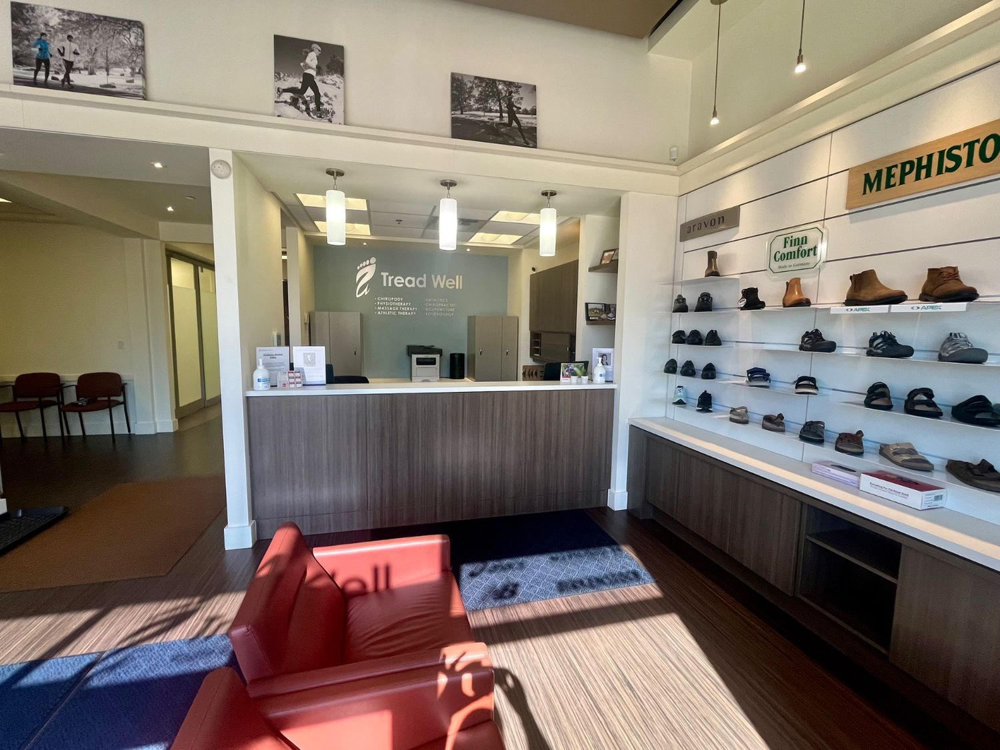
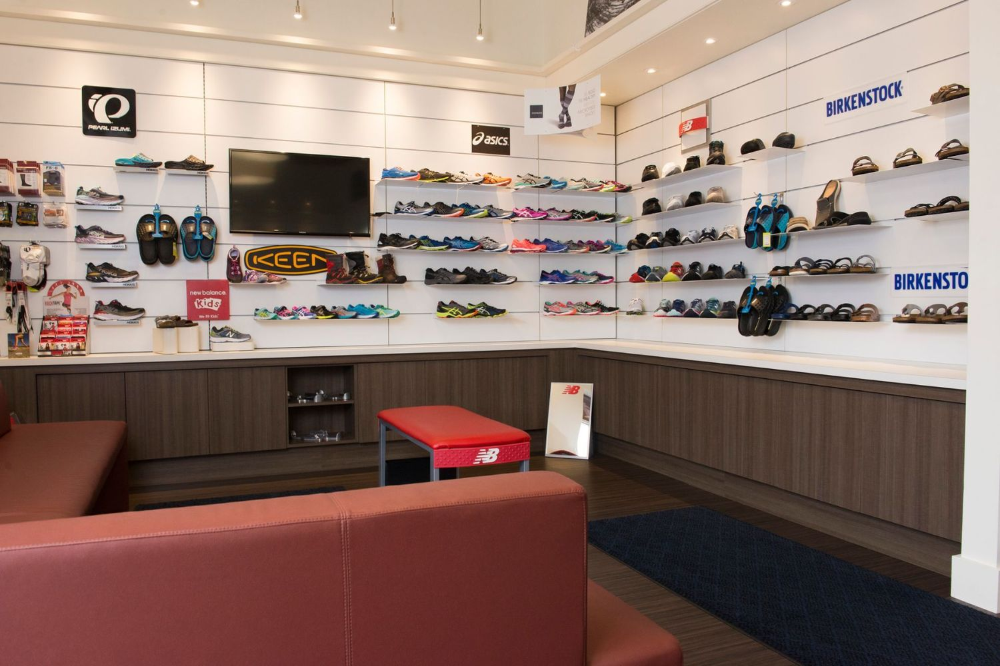
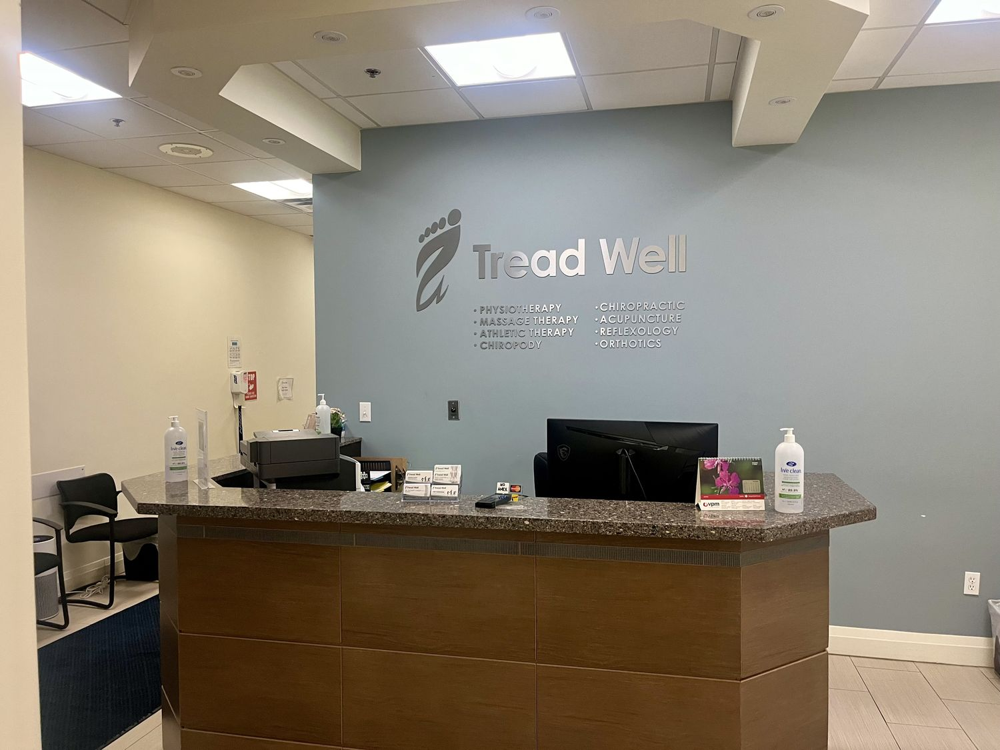
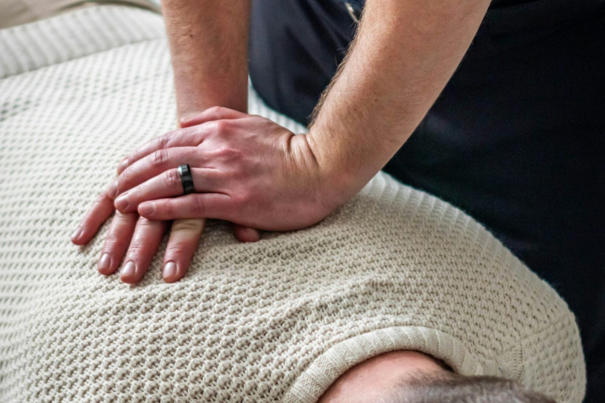
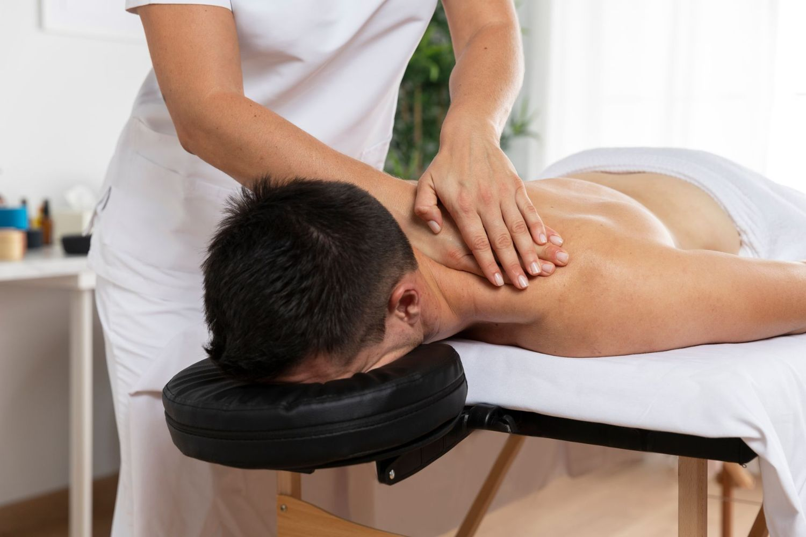
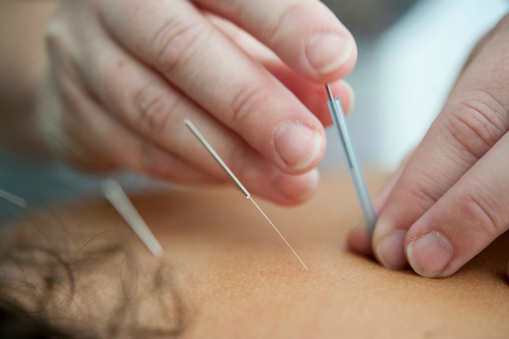
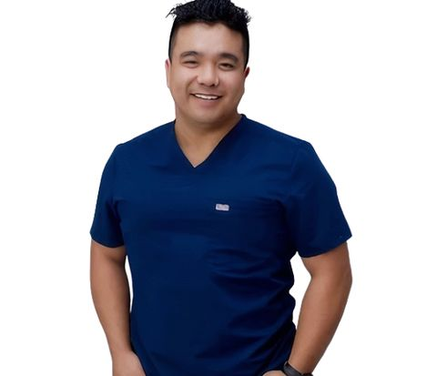

Nancy Nguyen
Registered Chiropodist / Registered Acupuncturist
B.Sc., R.Ac., D.Pod.M
Foot & Wellness Clinic · Burlington since 2012
A foot clinic and a rehabilitation clinic under one roof in Burlington: chiropody, custom orthotics, physiotherapy, chiropractic, massage and acupuncture, all at the same address. New patients welcome, no doctor's referral needed.

Under one roof
Pain rarely stays where it starts. With both clinics in the same building on Harvester Road, your care can move between them without you starting again somewhere new.
Foot Clinic
Registered Chiropodists assessing and treating the feet, toes, heels, ankles and nails. Services include custom orthotics, diabetic foot care, in-office procedures, orthopedic footwear and compression socks.
Many foot concerns involve more than assessment. Where your plan combines in-office procedures, custom orthotics, footwear and compression, care is coordinated between our chiropodists, and orthotic fabrication, footwear fittings and compression are all arranged at the same address.

Chiropody assessment and treatment is the core of our Foot Clinic. Our Registered Chiropodists diagnose, treat and prevent conditions of the foot and ankle, from routine nail and callus care through to diabetic foot health, in-office nail surgery, wart removal and therapeutic laser and ultrasound.
Registered Chiropodists are provincially regulated health professionals in Ontario with full clinical scope of practice for the assessment and treatment of foot and ankle conditions. Pedorthists focus on footwear and orthotics, whereas Registered Chiropodists are additionally authorized to:
The Tread Well foot clinic is led entirely by Registered Chiropodists, which provides our patients with access to a full scope of foot care at a single address in Burlington.
Every foot concern starts with a chiropody assessment. From there, routine care, diabetic foot health, in-office nail surgery, wart treatment and therapeutic laser and ultrasound are all performed by Registered Chiropodists at 3305 Harvester Road.
Nail trimming, callus and corn management, bunion care, and monitoring of the feet and nails for early signs of injury, infection or other concerns.
Many patients with diabetes experience numbness or reduced sensation, which makes minor injuries difficult to detect. We assess circulation and sensation, provide routine care, and explain what to monitor at home.
Partial Nail Avulsion (PNA) removes a portion of the affected nail. Total Nail Avulsion (TNA) removes the whole nail. Both are performed in office under local anesthetic, with medication to prevent regrowth where indicated.
Plantar warts are a viral skin infection. Overlying hard skin is reduced and a chemical solution is applied to the infected tissue over a short series of visits; response varies, and treatment is adjusted as it progresses.
Low-level laser is applied over the painful area to reduce inflammation and support healing at a cellular level. Our Registered Chiropodists use it for heel and arch pain, Achilles and other tendon problems, arthritic joints and slow-healing tissue. Treatment is painless and takes only a few minutes within your appointment.
Sound waves are directed into deeper soft tissue to ease pain and improve tissue extensibility, commonly used for plantar fasciitis, tendon and ligament injuries and persistent soft tissue tightness in the foot and ankle. Laser and ultrasound are available at both of our clinics and are used by our Chiropodists and physiotherapists alike.
Routine appointments include a thorough evaluation, together with nail trimming, callus management, bunion care and monitoring for early signs of injury or infection. Where pain, inflammation or a tendon problem is involved, laser or ultrasound therapy may be added to your treatment.
Custom orthotics are inserts prescribed by a chiropodist to change how your foot loads as you walk or run. We make everything from standard thermoplastic devices through to specialized cast work.
Your feet are captured with a 3D digital scan by default. For specific conditions, or where an ankle-height device is needed, a plaster cast is taken instead. Either way, lab technicians hand-finish every device, which lets us accommodate foot types that an off-the-shelf insert cannot.
Our orthotics are fabricated by Langer Biomechanics and Paris Orthotics, two of the most established custom orthotic labs in North America.
Langer Biomechanics: Markham, Ontario. Fabricating fully custom foot orthotics since 1971.
Everyday footwear varies widely in depth, width and heel height, and each places different demands on the feet. Explore how we design and build orthotics for the shoes you wear most days.
Narrow, low-profile devices for flats, loafers, oxfords and slip-on dress shoes.
Learn more
Cobra and Slimthotics devices shaped for pumps, dress heels and shoes with a heel above 3 cm.
Learn more
Support and cushioning for long shifts on hard surfaces in safety and work footwear.
Learn more
Supportive devices for sneakers, slip-ons and the lifestyle footwear worn most days.
Learn more
Moderate control and shock absorption for fitness walking, hiking trails and daily distance.
Learn more
Theracare Soft devices with high shock absorption to reduce pressure and shear on the diabetic foot.
Learn more
Different sports place different demands on the feet, from impact absorption in running to lateral stability on the court. We also design orthotics around the footwear and movement patterns of specific sports.
For drop foot, post-stroke gait and ankle or tendon instability, we prescribe the Richie Brace®, a low-profile custom AFO that fits inside your regular shoes.
Custom orthotics are fitted using 3D digital scanning. The initial Chiropodist assessment is billed separately; the orthotics fee covers your scan, fitting appointment and a follow-up review.
The first step is an initial assessment appointment with a Chiropodist, billed separately from the orthotics fee. Most extended health plans include an orthotics benefit, and we direct-bill most extended health plans.
Your care starts with an initial assessment and biomechanical evaluation with a Chiropodist, billed as its own appointment. The orthotics fee is separate and covers the 3D digital scan, fabrication of the devices, your fitting appointment, and a follow-up review to confirm they are working as intended.
Devices are typically ready for fitting three to four weeks after your scan. Your fitting appointment is booked when the orthotics arrive, and your practitioner fits them into your shoes with you present.
Most patients adapt over one to two weeks. We recommend starting with a few hours a day and building up, rather than wearing them for a full day immediately. Some new pressure or tiredness in the arch and calf is normal early on; sharp pain is not, and should be reviewed at a follow-up.
Your practitioner prescribes the device with your footwear in mind, and will tell you which shoe types it suits. Tightly shaped footwear such as skates, ski boots, cycling shoes and cleats usually requires a sport-specific device made to fit that equipment.
Most extended health plans include an orthotics benefit, often on a set dollar amount per year or every few years. Coverage frequently requires a prescription and a specific claim form, both of which we provide. Requesting a pre-determination from your insurer beforehand is the surest way to know your coverage.
Discreet support for the working wardrobe.
With minimal room inside the shoe, load tends to concentrate at the heel and ball of the foot. The device must redistribute that load while remaining slim enough to preserve the fit of the shoe.
A contoured, narrow shell fills the space beneath the arch so the midfoot shares load that would otherwise fall on the heel and forefoot.
Where foot posture contributes to heel, arch or forefoot discomfort, moderate control can help guide the foot within the shoe. Your assessment determines the level of control appropriate for you.
A thin top cover and heel seat add comfort on firm soles without reducing the space available for the foot.
Orthotic research continues to develop, and individual responses vary. We base our prescriptions on your assessment and use published evidence to guide, rather than overstate, expected outcomes.
Selected references
Dress devices are built to a narrow, low-profile standard to suit the limited volume of dress footwear. Your chiropodist adjusts materials, posting and shell rigidity according to your assessment, body weight and level of activity.
Control level Moderate
This is an example only. The actual design and materials of your device will be based on your chiropodist’s assessment.
Women’s flats and men’s loafers, where depth and width inside the shoe are limited.
Control level 3–4
This is an example only. The actual design and materials of your device will be based on your chiropodist’s assessment.
Most slip-on casual and dress shoes.
Copolymer, XT Sprint, TL2100, Performance Rx
An orthotic performs best in footwear with appropriate structure, depth and fit. Your chiropodist can advise on suitable footwear, and we can order select models through our footwear service.
Most dress shoes can accommodate a narrow, low-profile device, particularly those with a removable insole or a closed heel. Your chiropodist will assess your shoes at your appointment and advise where a shoe is too shallow.
Often, yes, provided the shoes are similar in shape and depth. Shoes that differ substantially in width or heel height may require a separate device.
Meet with our Registered Chiropodists to discuss your feet, your daily activities and your footwear, and whether a custom orthotic is appropriate for you.
Slim, shaped support for an elevated heel.
A heeled shoe concentrates load at the forefoot and reduces the area of the foot in contact with the shoe. The device must add support through the arch without taking up space the toes and heel need.
A cobra-shaped shell, narrowed through the midfoot, fills the space beneath the arch so more of the foot shares load on the slope of the shoe.
Gentle control helps keep the heel seated and reduces the tendency of the foot to slide forward within the shoe.
A Poron extension and suede or micro-suede top cover add comfort beneath the forefoot, where pressure concentrates in heeled footwear.
Orthotic research continues to develop, and individual responses vary. We base our prescriptions on your assessment and use published evidence to guide, rather than overstate, expected outcomes.
Selected references
Heeled devices are built to a slim, cobra-shaped standard to fit the narrow, sloped interior of a dress shoe. Your chiropodist adjusts materials, posting and shell rigidity according to your assessment, body weight and level of activity.
Control level 1–2
This is an example only. The actual design and materials of your device will be based on your chiropodist’s assessment.
Dress shoes with a heel height greater than 3 cm.
None
Control level Moderate
This is an example only. The actual design and materials of your device will be based on your chiropodist’s assessment.
High-heeled dress shoes with a narrow, sloped interior.
An orthotic performs best in footwear with appropriate structure, depth and fit. Your chiropodist can advise on suitable footwear, and we can order select models through our footwear service.
The shell is cut narrow through the midfoot, shaped a little like a cobra’s head, so it fits the slim waist of a heeled dress shoe while still supporting the arch and heel.
These devices are designed for dress shoes with a heel above 3 cm. Very high or narrow heels may not accommodate a device, and your chiropodist will assess your shoes at your appointment.
Meet with our Registered Chiropodists to discuss your feet, your daily activities and your footwear, and whether a custom orthotic is appropriate for you.
Support for the length of every shift.
Standing and walking for eight to twelve hours on concrete or steel floors provides little opportunity for the foot to recover. The goal of a work orthotic is to distribute load evenly and reduce localized pressure throughout the shift.
An orthotic contoured to your arch shares load across the midfoot, reducing the concentration of pressure at the heel and forefoot that commonly develops during long periods of standing.
Where foot posture contributes to strain further up the leg, an orthotic can help moderate that pattern. Your assessment determines whether this is a relevant factor for you.
Shock-attenuating materials help absorb impact on hard floors, while a correctly fitted boot ensures the orthotic sits securely and the foot is not compressed or allowed to slide.
Orthotic research continues to develop, and individual responses vary. We base our prescriptions on your assessment and use published evidence to guide, rather than overstate, expected outcomes.
Selected references
Work orthotics are built from a shock-attenuating base and adjusted to the volume and construction of your boot, including steel or composite toe caps. Your chiropodist adjusts materials, posting and shell rigidity according to your assessment, body weight and level of activity.
Control level 4
This is an example only. The actual design and materials of your device will be based on your chiropodist’s assessment.
Most men’s, women’s and children’s athletic footwear where maximum shock attenuation is important.
Copolymer, XT Sprint, TL2100, Performance Rx
An orthotic performs best in footwear with appropriate structure, depth and fit. We can order the brands below and advise on the models best suited to your feet and your orthotic.
Red WingVasqueKeen
In most cases, yes. Most safety and work boots have a removable insole, and the orthotic is designed around the volume of your boot so that the toe cap and fit are not compromised.
Worn or poorly fitting boots can undermine the benefit of an orthotic. Your chiropodist can assess your current boots, and we can order work footwear from brands including Red Wing, Vasque and Keen.
Durability depends on body weight, hours worn and working conditions. Your chiropodist will review the device at follow-up visits and advise when a top cover or device should be replaced.
Meet with our Registered Chiropodists to discuss your feet, your daily activities and your footwear, and whether a custom orthotic is appropriate for you.
Everyday comfort, from errands to evenings out.
Casual activity combines standing, walking and frequent changes of pace. Soft, flexible footwear can leave the foot working harder to stabilize itself, particularly as the day goes on.
A contoured shell supports the arch and heel within a flexible shoe, reducing the demand placed on the plantar fascia and supporting tendons.
Moderate control helps guide the foot through the walking cycle where assessment identifies excessive or poorly controlled motion.
A cushioned top cover and extension improve comfort on hard pavements and floors while keeping the device slim enough for everyday footwear.
Orthotic research continues to develop, and individual responses vary. We base our prescriptions on your assessment and use published evidence to guide, rather than overstate, expected outcomes.
Selected references
Casual devices are built to either a lower-volume athletic standard for sneakers or a narrow casual standard for slip-on shoes. Your chiropodist adjusts materials, posting and shell rigidity according to your assessment, body weight and level of activity.
Control level 4
This is an example only. The actual design and materials of your device will be based on your chiropodist’s assessment.
Most men’s, women’s and children’s lower-volume athletic footwear.
Copolymer, XT Sprint, TL2100, Performance Rx
Control level 3–4
This is an example only. The actual design and materials of your device will be based on your chiropodist’s assessment.
Most slip-on casual and dress shoes.
Copolymer, XT Sprint, TL2100, Performance Rx
An orthotic performs best in footwear with appropriate structure, depth and fit. We can order the brands below and advise on the models best suited to your feet and your orthotic.
New BalanceAsics
Not necessarily. Many patients move one device between similar casual shoes. Where your footwear varies considerably in volume, your chiropodist may recommend a second device.
Very soft shoes can limit what an orthotic is able to do. Your chiropodist can advise whether your current footwear provides a suitable base for the device.
Meet with our Registered Chiropodists to discuss your feet, your daily activities and your footwear, and whether a custom orthotic is appropriate for you.
Support for every step of the daily walk.
Each step loads the heel, rolls the foot through the arch and pushes off from the forefoot. Over a long walk, fatigue of the supporting muscles can allow the arch to lower and pressure to build.
A semi-rigid shell supports the arch through midstance, sharing load that would otherwise fall on the plantar fascia and heel.
Rearfoot posting moderates excessive motion at heel contact, helping the foot follow a more consistent path through each step.
Heel lifts, a cushioned bottom cover and a shock-absorbing base help manage the repeated impact of longer walks.
Orthotic research continues to develop, and individual responses vary. We base our prescriptions on your assessment and use published evidence to guide, rather than overstate, expected outcomes.
Selected references
The lab standard below is the starting point for your device. Your chiropodist adjusts materials, posting and shell rigidity according to your assessment, body weight and level of activity.
Control level Moderate
This is an example only. The actual design and materials of your device will be based on your chiropodist’s assessment.
Walking shoes and footwear for moderate- to high-impact activity, including step and aerobic exercise.
Control level 4
This is an example only. The actual design and materials of your device will be based on your chiropodist’s assessment.
Most men’s, women’s and children’s athletic footwear where maximum shock attenuation is important.
Copolymer, XT Sprint, TL2100, Performance Rx
An orthotic performs best in footwear with appropriate structure, depth and fit. We can order the brands below and advise on the models best suited to your feet and your orthotic.
New BalanceAsics
Often, yes, if your hiking footwear has similar depth. Rigid hiking boots may require a device built specifically for the boot, and your chiropodist can advise.
We generally recommend increasing wear gradually over one to two weeks, starting with shorter walks before returning to your usual distance.
Meet with our Registered Chiropodists to discuss your feet, your daily activities and your footwear, and whether a custom orthotic is appropriate for you.
Protection first, for feet at risk.
Rather than correcting foot motion, the priority is protection: spreading load across the widest possible area and cushioning prominent areas of the foot that are vulnerable to repeated pressure.
A total-contact, semi-flexible shell shaped to your foot increases the area of contact, reducing peak pressures at the heel, metatarsal heads and other prominent areas.
Control is deliberately kept low. The device accommodates the shape of the foot rather than forcing it into a new position, which can create pressure elsewhere.
PPT and slow-recovery foam absorb shock and reduce shear forces, which are associated with skin breakdown in the insensate foot.
Orthotic research continues to develop, and individual responses vary. We base our prescriptions on your assessment and use published evidence to guide, rather than overstate, expected outcomes.
Selected references
The Theracare Soft is an accommodative device intended for extra-depth and therapeutic footwear. Your chiropodist adjusts materials, posting and shell rigidity according to your assessment, body weight and level of activity.
Control level Low
This is an example only. The actual design and materials of your device will be based on your chiropodist’s assessment.
Extra-depth, diabetic and therapeutic footwear for feet at risk of pressure injury.
An orthotic performs best in footwear with appropriate structure, depth and fit. Your chiropodist can advise on suitable footwear, and we can order select models through our footwear service.
An accommodative device usually requires footwear with extra depth and a wide toe box. Your chiropodist will assess your current shoes and advise on suitable therapeutic footwear.
People with diabetes benefit from regular foot assessments. We review both your feet and the condition of the device at follow-up visits, as cushioning materials compress over time.
Please contact the clinic promptly. An active wound requires assessment first, and the approach to offloading differs from a protective orthotic.
Meet with our Registered Chiropodists to discuss your feet, your daily activities and your footwear, and whether a custom orthotic is appropriate for you.
Devices designed for the demands of your sport, accounting for your biomechanics, movement patterns and strength, as well as the equipment the orthotic must fit inside.
In many sports, the foot absorbs impact force on landing, then rebounds to provide energy and momentum for the next movement. A sport orthotic must support that action, working with the spring-like quality of your own foot rather than restricting it.
In other sports, the foot’s role is stability and alignment. In skiing or golf, the foot is the first point of contact with the ground, and its position aligns the knees, hips and upper body for effective power transfer. Here, the orthotic provides a stable, well-aligned base for the rest of the body.
Each device is designed around the footwear it will sit inside, so the fit stays accurate in tightly shaped equipment. Explore each sport to learn how the device is designed and built.
Shock attenuation and support for the repetitive loading of distance and recreational running.
Learn more
A stable, low-profile base for the golf swing and the distance walked over a round.
Learn more
Support for the lateral movement, sudden stops and changes of direction of court sports.
Learn more
Footbeds designed for alpine ski boots and snowboard boots, supporting balance and edge control.
Learn more
Low-profile devices for stiff-soled cycling shoes, supporting foot contact and knee alignment.
Learn more
Slim devices for tightly fitted cleats, managing pressure beneath the studs and forefoot.
Learn more
High-control, high shock-absorption devices for jumping, landing and sudden stops.
Learn more
Rigid carbon fibre devices fitted using a 3D scan of your skate’s interior.
Learn more
Custom orthotics are fitted using 3D digital scanning. The initial Chiropodist assessment is billed separately; the orthotics fee covers your scan, fitting appointment and a follow-up review.
The first step is an initial assessment appointment with a Chiropodist, billed separately from the orthotics fee. Most extended health plans include an orthotics benefit, and we direct-bill most extended health plans.
Our rehabilitation team shares the building. Where your assessment identifies a knee, hip or back concern limiting your performance, you can be referred to physiotherapy, chiropractic or massage therapy at the same address.
Hockey orthotics need to account for both the player’s feet and the equipment they wear. Our approach combines an individual assessment with a skate-specific design.
We work with competitive hockey players and local organizations, with attention to each player’s concerns, equipment, and demands on the ice.
Our lab manufactures rigid carbon fibre orthotic devices specifically designed for hockey skates. The design is selected around the player’s assessed needs and the space available within the skate.
We scan the interior of your skate so the lab can account for its shape when manufacturing your orthotics. This helps achieve a precise fit within your equipment.
The illustration shows the concept of adding contoured support beneath the foot inside a hockey skate. Your assessment helps determine whether custom orthotics are appropriate and how the device should be designed for your feet and equipment.
Conceptual illustration only. Orthotic appearance, support, and effects vary with the individual prescription.
Bring the hockey skates you intend to use with your orthotics, your usual skating socks, and any current insoles or orthotics.
An orthotic made for everyday footwear may not suit the interior of your hockey skate. Bring your existing devices so your practitioner can assess their suitability.
The interior scan captures the shape of the equipment the orthotic needs to fit. It helps the lab account for that shape when designing and manufacturing your device.
An assessment is the first step. Your practitioner will discuss whether custom orthotics are appropriate for your feet, concerns, and equipment.
Bring the new skates and existing orthotics for review. Fit and suitability should be reassessed rather than assuming the same device will transfer.
Contact our team for current pricing and manufacturing timelines for custom hockey orthotics.
Coverage depends on your individual plan and its requirements. Check with your insurer before ordering, and ask our team about the documentation available for your claim.
Meet with our Burlington team to discuss your feet, your equipment, and whether custom hockey skate orthotics are right for you.
Repetitive loading, managed stride by stride.
Each foot strike loads the lower limb several times over, then asks the foot to convert from a shock absorber to a rigid lever for push-off. A running orthotic is designed to support both phases.
Contoured arch support can reduce the demand on the plantar fascia and the tendons that support the arch, particularly as they fatigue over longer distances.
Research indicates that foot orthoses can produce modest changes in rearfoot motion and lower-limb loading. The objective is not to hold the foot rigidly, but to guide it along a comfortable, efficient movement path.
Shock-attenuating top covers and arch fill help distribute pressure across a larger area of the foot, while comfort has been associated with favourable changes in muscle activity and loading.
Orthotic research continues to develop, and individual responses vary. We base our prescriptions on your assessment and use published evidence to guide, rather than overstate, expected outcomes.
Selected references
The lab standard below is the starting point for your device. Your chiropodist adjusts materials, posting and shell rigidity according to your assessment, body weight and level of activity.
Control level 4
This is an example only. The actual design and materials of your device will be based on your chiropodist’s assessment.
Most men’s, women’s and children’s athletic footwear where maximum shock attenuation is important.
Copolymer, XT Sprint, TL2100, Performance Rx
An orthotic performs best in footwear with appropriate structure, depth and fit. We can order the brands below and advise on the models best suited to your feet and your orthotic.
New BalanceAsicsSaucony
A running orthotic is designed to support your natural movement rather than impose a new one. Most runners notice a gradual change in comfort rather than a change in stride, and we recommend a short break-in period before longer runs.
The orthotic is built to suit the volume and structure of your shoe. Your chiropodist can advise whether your current shoe is suitable, and we can order running footwear from several brands.
Meet with our Registered Chiropodists to discuss your feet, your sport and your equipment, and whether a custom orthotic is appropriate for you.
A stable base for the swing and the walk.
The feet anchor rotation during the swing and absorb repeated load while walking. Both tasks are affected by fatigue as a round progresses.
Arch and heel support can help maintain a consistent foot position at address and through the transfer of weight, particularly later in a round.
Controlling excessive pronation of the trail and lead foot may improve stability during rotation. Your assessment considers both feet, as they perform different roles in the swing.
A low-profile cushioned top cover improves comfort while walking without raising the foot within the shoe or reducing ground feel.
Orthotic research continues to develop, and individual responses vary. We base our prescriptions on your assessment and use published evidence to guide, rather than overstate, expected outcomes.
Selected references
The lab standard below is the starting point for your device. Your chiropodist adjusts materials, posting and shell rigidity according to your assessment, body weight and level of activity.
Control level 4
This is an example only. The actual design and materials of your device will be based on your chiropodist’s assessment.
Most men’s, women’s and children’s lower-volume athletic footwear.
Copolymer, XT Sprint, TL2100, Performance Rx
An orthotic performs best in footwear with appropriate structure, depth and fit. We can order the brands below and advise on the models best suited to your feet and your orthotic.
New BalanceAsics
The low-profile design is intended to preserve ground feel. It sits close to the foot and is built to suit the lower volume of a golf shoe.
Sometimes, depending on the volume of the shoes. Your chiropodist can advise whether a dedicated golf device is preferable.
Meet with our Registered Chiropodists to discuss your feet, your sport and your equipment, and whether a custom orthotic is appropriate for you.
Built for lateral movement and quick changes of direction.
Court sports load the foot in multiple directions. The orthotic must provide stability without restricting the rapid adjustments required on court.
A deep heel cup and contoured arch help keep the foot centred over the shoe’s base during lateral movement.
Moderating excessive foot motion may reduce strain on the ankle, knee and the tendons that stabilize the foot during quick changes of direction.
Shock-attenuating materials help manage the repeated loading of the forefoot and heel on hard court surfaces.
Orthotic research continues to develop, and individual responses vary. We base our prescriptions on your assessment and use published evidence to guide, rather than overstate, expected outcomes.
Selected references
The lab standard below is the starting point for your device. Your chiropodist adjusts materials, posting and shell rigidity according to your assessment, body weight and level of activity.
Control level 4
This is an example only. The actual design and materials of your device will be based on your chiropodist’s assessment.
Most men’s, women’s and children’s athletic footwear where maximum shock attenuation is important.
Copolymer, XT Sprint, TL2100, Performance Rx
An orthotic performs best in footwear with appropriate structure, depth and fit. Your chiropodist can advise on suitable footwear, and we can order select models through our footwear service.
An orthotic may help as part of a broader plan, though strength and balance work are also important. Where appropriate, we can refer you to our physiotherapy team in the same building.
A court shoe with a removable insole and adequate depth is usually required. Your chiropodist can advise on suitable footwear at your assessment.
Meet with our Registered Chiropodists to discuss your feet, your sport and your equipment, and whether a custom orthotic is appropriate for you.
Precise contact between foot, boot and edge.
Rigid boots restrict ankle motion, so balance adjustments occur largely within the foot. Supporting the arch and heel reduces unwanted movement inside the boot.
A footbed contoured to your foot fills the space beneath the arch, so the entire sole of the foot shares the load rather than the heel and forefoot alone.
Reducing collapse of the arch within the boot helps keep the lower leg aligned over the foot, which is relevant to edging and control.
A stable, well-fitted foot requires less muscular effort to hold its position, which may reduce fatigue and cramping over a full day on the hill.
Orthotic research continues to develop, and individual responses vary. We base our prescriptions on your assessment and use published evidence to guide, rather than overstate, expected outcomes.
Selected references
The lab standard below is the starting point for your device. Your chiropodist adjusts materials, posting and shell rigidity according to your assessment, body weight and level of activity.
Control level 3–4
This is an example only. The actual design and materials of your device will be based on your chiropodist’s assessment.
Most men’s and women’s alpine ski boots.
Copolymer, XT Sprint, TL2100, Performance Rx
Control level 4–5
This is an example only. The actual design and materials of your device will be based on your chiropodist’s assessment.
Most men’s and women’s snowboard boots.
For hard-shell snowboard boots, the Alpine model is used.
Copolymer, XT Sprint, TL2100, Performance Rx
An orthotic performs best in footwear with appropriate structure, depth and fit. Your chiropodist can advise on suitable footwear, and we can order select models through our footwear service.
Yes, typically. Alpine ski boots and snowboard boots differ in volume, flex and stance, so each device is built to a different lab standard.
A footbed often improves fit by filling the space beneath the arch. We assess the boot and liner so the device is designed around your equipment.
Meet with our Registered Chiropodists to discuss your feet, your sport and your equipment, and whether a custom orthotic is appropriate for you.
Alignment through every pedal stroke.
The foot is fixed to the pedal, so any misalignment is repeated with each revolution. Supporting the midfoot improves contact with the rigid sole of the shoe.
Contoured support increases contact area beneath the midfoot, so pedalling force is distributed across more of the foot rather than concentrated at the forefoot.
Foot orthoses and in-shoe wedges can alter lower-limb mechanics during cycling, including frontal-plane knee motion, which is of interest in riders with knee pain.
A low-profile design preserves the rigid connection between foot and pedal, maintaining power transfer while reducing localized pressure.
Orthotic research continues to develop, and individual responses vary. We base our prescriptions on your assessment and use published evidence to guide, rather than overstate, expected outcomes.
Selected references
The lab standard below is the starting point for your device. Your chiropodist adjusts materials, posting and shell rigidity according to your assessment, body weight and level of activity.
Control level 4
This is an example only. The actual design and materials of your device will be based on your chiropodist’s assessment.
Most men’s, women’s and children’s lower-volume athletic footwear.
Copolymer, XT Sprint, TL2100, Performance Rx
An orthotic performs best in footwear with appropriate structure, depth and fit. Your chiropodist can advise on suitable footwear, and we can order select models through our footwear service.
An orthotic and a professional bike fit complement one another. We recommend completing a bike fit with your orthotics in place, so the fit reflects your supported foot position.
Road and mountain bike shoes are low in volume, so the device is built to a low-profile standard designed for this footwear.
Meet with our Registered Chiropodists to discuss your feet, your sport and your equipment, and whether a custom orthotic is appropriate for you.
Support within the slimmest of footwear.
Cleats are close-fitting and firm, offering little internal support. Space is limited, so the device must be slim without compromising function.
A slim contoured shell supports the arch within the tight fit of a cleat, reducing strain on the plantar fascia during running and cutting.
Moderating excessive foot motion may reduce load on the tendons of the foot and ankle during rapid changes of direction.
A thin cushioned extension helps disperse the pressure concentrated beneath studs and the forefoot.
Orthotic research continues to develop, and individual responses vary. We base our prescriptions on your assessment and use published evidence to guide, rather than overstate, expected outcomes.
Selected references
The lab standard below is the starting point for your device. Your chiropodist adjusts materials, posting and shell rigidity according to your assessment, body weight and level of activity.
Control level 4
This is an example only. The actual design and materials of your device will be based on your chiropodist’s assessment.
Most men’s, women’s and children’s lower-volume athletic footwear.
Copolymer, XT Sprint, TL2100, Performance Rx
An orthotic performs best in footwear with appropriate structure, depth and fit. Your chiropodist can advise on suitable footwear, and we can order select models through our footwear service.
Most cleats have a removable insole, and the device is built to a low-profile standard to fit the limited volume. Your chiropodist will assess the fit of your cleats at your appointment.
Yes, where assessment shows a clear need. Growing feet are reassessed regularly, as devices may need to be replaced as the foot changes.
Meet with our Registered Chiropodists to discuss your feet, your sport and your equipment, and whether a custom orthotic is appropriate for you.
Control and shock absorption for jumping and landing.
Repeated landings load the heel, arch and forefoot, while pivots and cuts create shear forces. The device must control motion and absorb impact at the same time.
A semi-rigid shell and deep heel seat help keep the foot centred over the shoe during landing and lateral movement.
High-control posting moderates excessive rearfoot motion, which may reduce strain on the ankle and knee during pivots and cuts.
Shock-absorbing arch fill and a full-length cushioned bottom cover help manage the repeated impact of jumping and landing.
Orthotic research continues to develop, and individual responses vary. We base our prescriptions on your assessment and use published evidence to guide, rather than overstate, expected outcomes.
Selected references
The lab standard below is the starting point for your device. Your chiropodist adjusts materials, posting and shell rigidity according to your assessment, body weight and level of activity.
Control level High
This is an example only. The actual design and materials of your device will be based on your chiropodist’s assessment.
Basketball and other court footwear subject to repeated jumping and landing.
An orthotic performs best in footwear with appropriate structure, depth and fit. Your chiropodist can advise on suitable footwear, and we can order select models through our footwear service.
The device adds very little weight and is designed to replace the shoe’s original insole, so most players notice little difference once it is broken in.
Heel pain in jumping athletes is common and often multifactorial. An orthotic may form part of management, and your chiropodist will assess the cause before recommending a device.
Meet with our Registered Chiropodists to discuss your feet, your sport and your equipment, and whether a custom orthotic is appropriate for you.
Footwear measured and fitted in clinic, matched to how and where you will wear it. There is no fee for a footwear fitting. Fittings are with a member of our admin team experienced in footwear fitting and should be booked in advance. A fitting does not include an assessment with a Chiropodist, which is booked separately.
Athletic, casual, sandal and safety footwear from established orthopedic brands. Where your size or colour is not in stock, we order it directly from the manufacturer.
Poorly fitting shoes are among the most common contributors to foot pain, and they can worsen bunions, calluses and hammertoes. Our trained fitters measure your feet and match the shoe to its intended use, whether athletic, casual, sandal or safety footwear.
Where we do not hold your size or colour in stock, we order it directly from the manufacturer, from a size 15 extra-wide through to a size 5 narrow.
We can review whether your third-party benefits cover off-the-shelf orthopedic footwear and submit an estimate to your insurer before you purchase. Footwear and custom orthotics work together, though shoes are always sold separately from orthotics.
Medical-grade compression socks are fitted without an appointment by our Certified Compression Sock Fitters, and braces are chosen after assessment.
Compression socks
Bracing & supports
Many patients wear shoes that are too small, which crowds the foot, contributes to numbness while walking or running, and causes blisters. A correctly fitted shoe allows room to move the toes freely.
Badly fitting shoes can cause or aggravate bunions, calluses and hammertoes. For patients with diabetes, correct fit is more important still.
From a size 15 extra-wide through to a size 5 narrow, we order directly from the manufacturer so that the selection available matches that of more common sizes.
Fittings are free. For a foot assessment, book with one of our Chiropodists.
Break footwear in gradually over shorter walks before a long one, pair it with moisture-wicking socks, and address hot spots early rather than walking through them. If you have had heel pain, bunions or previous blistering, a fitting and an orthotic review before the season is far easier than treating an injury during it.
Many patients wear shoes that are too small, which crowds the foot, causes numbness while walking or running and produces blisters. We measure rather than estimate, and a correctly fitted shoe leaves room to move the toes freely.
Yes. We hold direct manufacturer accounts, so specific models can be ordered in for your next visit. Sizing from a 15 extra-wide through to a 5 narrow is ordered directly, so the selection matches that of more common sizes.
Shoe lifts, rocker soles and other modifications prescribed by our Registered Chiropodists, adapting your existing footwear to a diagnosed condition. Most insurance plans cover modifications when the required diagnosis is documented.
Material added to the heel, or the full length of the sole, to equalize leg length. The lift is blended into the existing outsole so the shoe keeps its tread and walks naturally.
A curved sole profile that reduces bending at the toes and midfoot, lowering pressure under the forefoot and easing painful or stiff joints during push-off.
The sole is widened on the inner or outer side to improve stability for ankles that roll, or for feet that sit unevenly in the shoe.
The upper is stretched or relieved to make room for bunions, hammertoes, swelling or bony prominences without changing to a larger size.
Additional depth or internal adjustments so footwear can accommodate custom orthotics or an ankle-foot orthosis (AFO) comfortably.
Hook-and-loop or alternative closures for patients with limited hand function, reduced flexibility or difficulty reaching the feet.
Most insurance plans cover footwear modifications when the required diagnosis is documented. Following your assessment, we prepare the prescription and supporting documentation for your claim.
Most extended health plans cover footwear modifications when the required diagnosis is documented. We prepare the prescription and supporting documentation and can submit an estimate to your insurer before work begins.
In most cases, yes. The shoe needs to be in good condition with a sole construction that can be built up or reshaped. We will advise at your assessment whether your current footwear is suitable or whether a different shoe would give a better result.
Leg length is measured at your assessment, and the lift is prescribed based on the measured difference, your symptoms and how you walk. A lift does not always correct the full difference; the aim is comfortable, balanced walking.
Turnaround depends on the type of modification and the footwear. Reception will confirm an expected timeline when your shoes are sent to the lab.
Medical-grade compression for tired legs, long days, travel and recovery, measured and fitted by our Certified Compression Sock Fitters. No appointment is required.
Compression socks apply graduated pressure, firmest at the ankle and easing toward the knee, to help blood return from the lower legs and reduce fluid pooling in the feet.
Legs that ache or feel heavy by the end of the day often respond well to graduated compression, which assists blood returning from the lower legs.
Nurses, teachers, retail and trades workers who stand for long shifts use compression to reduce swelling and fatigue through the day.
Extended sitting slows circulation in the calves. A comfortable daily sock keeps ankles from swelling during long workdays and commutes.
Long flights and road trips are a common reason to start. Compression reduces ankle swelling and helps legs feel fresher on arrival.
Swelling and heaviness in the legs are common during pregnancy. Maternity-appropriate compression offers comfortable daily support.
Runners, cyclists and active patients use sport compression during and after activity to support recovery and reduce muscle soreness.
Medical-grade compression no longer means beige stockings. Knee-high socks come in solid tones, stripes, argyles and soft ribbed knits, in cotton, merino and microfibre, so the pair you need is one you are happy to put on every morning.
Attend during business hours to see one of our Certified Compression Sock Fitters. Your legs are measured, the right compression level is chosen, and most patients leave the same day with a pair that fits.
We keep a broad selection on hand, and special orders for less common sizes, colours and styles generally arrive within a few days.
We direct-bill most extended health plans for compression therapy. If you are unsure whether compression is appropriate for you, please speak with your physician.
Medical-grade compression from Sigvaris and JOBST, measured and fitted by our Certified Compression Sock Fitters. No appointment is required.
No. Compression fittings are available during business hours without an appointment, carried out by our Certified Compression Sock Fitters. Calling ahead is welcome if you would like to confirm a fitter is available.
Your fitter measures around the ankle and calf, and the length of the lower leg, ideally in the morning before swelling builds. These measurements determine the size, and the right compression level is chosen for your needs.
Many extended health plans cover medical-grade compression, sometimes requiring a prescription from your physician. We direct-bill most extended health plans.
Compression is suitable for most people, but it is not appropriate for everyone, particularly those with certain arterial or circulation conditions. If you are unsure, please speak with your physician before starting.
With daily wear and gentle washing, a pair typically keeps its compression for about six months. Many patients alternate between two pairs so each can rest between wears.
Compression sock fittings do not require an appointment. Attend during business hours, or call reception if you would like to confirm a fitter is available.
Knee, ankle, back and upper body bracing chosen after assessment, so the support matches your injury, your joint and the activities you want to return to.
A brace is a tool within an active recovery plan. It protects and steadies the joint while strength, control and confidence are rebuilt.
Support for the knee or ankle while tissues heal, so you can keep training in a controlled way rather than stopping altogether.
Sprains, ligament injuries and tendon irritation often benefit from a period of protection and gentle compression in the early stages.
For knees or ankles that give way, feel loose or lack confidence on uneven ground, a brace adds stability while strength is rebuilt.
Functional bracing helps patients step back into running, court sports, skiing and hiking with more confidence after an injury.
Unloading and soft-support braces can ease pain in arthritic knees and help keep walking and daily activity comfortable.
Lumbar and sacroiliac supports can steady the lower back during a painful flare-up or a return to lifting, alongside your exercise program.
Wrist, elbow and shoulder supports protect irritated tendons and recovering joints, and help with repetitive strain at work or in sport.
After ligament or knee surgery, a brace may be recommended to protect the repair while your rehabilitation progresses.
Soft supports and sleeves provide gentle compression and awareness of the joint during activity.
For ligament injuries and knees that feel unstable, a hinged functional brace controls unwanted movement while still allowing a full, natural stride.
These braces are often recommended for skiing, hockey, soccer and court sports, and after ligament surgery once your surgeon and physiotherapist agree it is time to return.
Your practitioner examines the joint, reviews the injury and discusses your activities to decide whether a brace will help, and which type.
Braces are sized and adjusted on you in clinic, so straps, hinges and pads sit where they should and the brace stays put when you move.
Bracing is combined with physiotherapy and exercise, with guidance on when to wear it and when to gradually wean off.
We recommend it. A brace works best when it is matched to the specific injury or joint concern, so our practitioners assess the knee or ankle first and recommend the type and level of support that suits it.
Usually not. Most braces are worn during activity or the periods of highest load, while strength and control are rebuilt through exercise. Your practitioner will explain when to wear it and when to wean off.
Not when it is used as part of an active plan. The brace provides support in the short term while rehabilitation exercises restore the strength that keeps the joint stable long term.
Many extended health plans cover braces, particularly custom and functional knee braces, and some require a prescription. Reception can help confirm what your plan includes.
We prescribe the Richie Brace®, a lightweight custom ankle-foot orthosis (AFO) for drop foot, post-stroke gait and chronic ankle and tendon conditions. It fits inside your regular shoes.
An ankle-foot orthosis is a brace that supports the foot and ankle together. Traditional AFOs are often bulky, rigid and difficult to fit in everyday shoes.
The Richie Brace® was introduced in 1996 by sports podiatrist Dr. Doug Richie as a lower-profile alternative. It pairs a custom foot orthotic with hinged lower-leg supports, giving control where it is needed while leaving the ankle free to move as you walk.
An AFO may be prescribed when weakness, nerve injury or tendon dysfunction affects how the foot clears the ground or how stable the ankle is, and a foot orthotic alone is not enough.
For drop foot and post-stroke gait
Flexural ankle joints provide a dynamic dorsiflexion assist of up to 15°, helping lift the front of the foot as you step through, which reduces toe catching and tripping.
For hindfoot and ankle stability
A hinged, semi-rigid design with anatomic ankle axis placement that controls rolling in and out of the foot and ankle while allowing unrestricted forward and backward ankle motion.
Each brace starts with a custom balanced foot orthotic made from a model of your foot, so support begins at the foot itself.
The lightweight shell and short heel cup sit inside a regular lace-up shoe, rather than requiring oversized footwear.
An anatomically placed hinge allows the ankle to move forward and back as you walk, while side-to-side motion is controlled.
A Registered Chiropodist reviews your history, strength, range of motion and gait, and confirms whether a custom AFO is appropriate.
A model of your foot and ankle is taken, and the brace model is selected and prescribed to suit your condition.
The brace is fabricated by the Richie Brace® laboratory to your prescription.
Your chiropodist fits the brace in your footwear, explains the break-in period and reviews how it is working at a follow-up visit.
The chiropodist assessment is billed separately. The AFO fee covers the casting, fabrication, fitting and one follow-up review. Custom AFOs are often covered by extended health plans; ask your insurer about bracing coverage.
In-office nail procedures under local anaesthetic, including ingrown toenail correction, partial and total nail removal (avulsion) and treatment of the nail matrix to prevent recurrence.
Registered Chiropodists in Ontario hold full scope of practice for minor surgical procedures of the foot, including nail surgery, local anaesthetic and prescriptions.
Nail surgery is one of the specialty treatments offered as part of chiropody care, following an assessment by a Registered Chiropodist. About chiropody treatment
An ingrown nail occurs when the nail edge presses into the surrounding skin, causing pain, swelling and sometimes infection. Assessment establishes the cause, which may include nail shape, footwear pressure or previous trauma.
Where only the offending border is involved, the affected section of nail is removed under local anaesthetic and the remaining nail is left intact.
When the whole nail plate is damaged, thickened or repeatedly infected, the full nail may be removed under local anaesthetic.
For nails that recur after previous removal, the nail matrix may be treated so that the problematic border does not grow back.
Procedures are performed in-office by a Registered Chiropodist using local anaesthetic. Most appointments take 30 to 45 minutes and you walk out afterwards.
A dressing is worn for the first days and the site is kept clean and dry. A follow-up visit confirms healing and, where required, an antibiotic or further care may be prescribed.
Often, yes. Recurrence is usually driven by nail shape, cutting technique or footwear pressure. Ongoing chiropody care addresses all three: the nail is cut and thinned correctly, the borders are kept clear of the surrounding skin, and footwear is reviewed. For nails that keep returning after removal, the nail matrix can be treated so the problematic border does not grow back.
The nail itself is removed under local anaesthetic, so the procedure is not painful. The anaesthetic injection is the uncomfortable part and takes only a moment. Most patients report immediate relief once the pressure of the nail edge is gone.
Yes. Appointments take roughly 30 to 45 minutes and you walk out afterwards with a sterile dressing in place. We suggest wearing a roomy shoe or open-toe footwear to your appointment.
A dressing is worn for the first few days and the site is kept clean and dry. Most patients are comfortable within a week. A follow-up visit confirms healing, and where needed an antibiotic or further care can be prescribed.
Assessment and treatment of fungal nail infection (onychomycosis), including diagnosis, nail debridement and two treatment options: Cutera GenesisPlus laser therapy and ToeFX phototherapy.
Fungal nail infection is persistent and rarely resolves on its own. We offer two treatment options — Cutera GenesisPlus laser therapy and ToeFX phototherapy — used alone or together, alongside nail debridement and reinfection control.
Nail fungus treatment is one of the specialty treatments offered as part of chiropody care, following an assessment by a Registered Chiropodist. About chiropody treatment
Thickened, discoloured or crumbling nails are not always fungal. Assessment distinguishes onychomycosis from trauma, psoriasis and other nail conditions, and a nail sample may be sent for laboratory confirmation.
Reducing the thickness of the affected nail relieves pressure and discomfort, improves appearance and allows topical treatment to reach the nail bed.
GenesisPlus is a 1064 nm Nd:YAG laser cleared for the temporary increase of clear nail in onychomycosis. Pulses of light pass through the nail plate and heat the fungal organisms in the nail bed without damaging the surrounding tissue. Each nail takes only a few minutes, most patients feel a brief warm snapping sensation, and there is no downtime — you walk out in your own footwear.
ToeFX is a drug-free phototherapy treatment delivered in clinic with the ToeFX Therapy Light. A photosensitising agent is applied to the prepared nail and then activated by light, targeting the fungal organisms in and under the nail plate without medication, injections or heat. Sessions are generally well tolerated and take only minutes. Side effects reported are typically mild and uncommon, and no bloodwork or liver monitoring is needed. It may be considered where topicals or oral antifungals have not worked, including some more severe infections; results vary, and your Chiropodist will advise whether it suits your nails. It is used on its own or alongside laser therapy.
Fungal nail infection often returns without changes to the surrounding environment. Guidance covers footwear, hosiery, shoe sanitizing and any skin infection at the same time such as athlete's foot.
Nails grow slowly, so visible improvement typically takes six to twelve months. Periodic reviews track clearance and adjust treatment where progress stalls.
ToeFX phototherapy is delivered in clinic with the ToeFX Therapy Light. Below are results from treated patients, reproduced with permission from ToeFX.
Images courtesy of ToeFX Inc. Individual results vary.
Assessment and treatment of plantar warts (verrucae) by Registered Chiropodists, including paring of overlying skin and chemical treatment of the infected skin over a short series of visits.
Plantar warts are a viral skin infection. Many clear on their own or with nonprescription salicylic acid, but thick, painful or persistent warts often benefit from professional care that reduces overlying hard skin and treats the infected tissue directly.
Wart treatment is one of the specialty treatments offered as part of chiropody care, following an assessment by a Registered Chiropodist. About chiropody treatment
Plantar warts (verrucae) are caused by a viral infection of the skin and are often mistaken for a callus. Assessment distinguishes a wart from corns, callus and other skin lesions before treatment begins.
A wart is an area of skin infected by the human papillomavirus (HPV), often covered by a layer of hard skin that pressure pushes inward. Overlying hard skin is pared back so treatment reaches the infected tissue, and a chemical solution is applied over a short series of visits. Many warts respond well, though some take longer or return, and the approach is adjusted to how your wart responds.
Mosaic clusters, or warts that have been present for years, may not respond to chemical treatment alone. For these, three further in-office options are available.
Warts are common in children and adolescents, particularly after swimming or using shared change rooms. Treatment is kept comfortable and paced appropriately for younger patients.
Wart virus spreads through moist shared surfaces and through the patient's own skin. Guidance covers footwear, socks, pool and gym use, and keeping the area covered while under treatment.
Progress is checked at each visit. Once the wart has resolved, the skin is reviewed to confirm normal skin lines have returned and to catch any early recurrence.
Nonprescription salicylic acid is a reasonable first option and clears many warts with consistent use over several weeks. Plantar warts are often covered by thick hard skin that limits how well a home product reaches the infected tissue. Treatment here pares back that overlying skin first so the solution can work more directly. Response varies, and some warts need several visits.
Most warts resolve over a short series of appointments, with the solution applied at each visit and progress checked each time. Clusters of warts, or lesions present for years, can take longer, and the plan is adjusted at review rather than run to a fixed number of visits.
They are frequently confused. A wart commonly shows small dark points, interrupts the skin lines of the sole and is painful when pinched from the sides, whereas a callus is tender under direct pressure. Assessment confirms which it is before treatment begins.
Wart virus spreads through moist shared surfaces and across your own skin. Keep the lesion covered, wear footwear in change rooms and around pools, do not pick or file it at home, and keep towels and socks separate from the rest of the household.
Focused shockwave therapy delivered by our Registered Chiropodists for persistent foot, heel and tendon pain, assessed and planned alongside orthotic and footwear care in the same appointment.
Shockwave is used for soft-tissue and tendon pain in the foot and ankle that has not settled with conservative care. It is a non-invasive option for patients who would prefer to avoid injection or surgery.
Shockwave for foot pain is one of the specialty treatments offered as part of chiropody care, following an assessment by a Registered Chiropodist. About chiropody treatment
The most common reason shockwave is used in the Foot Clinic. It is indicated for heel pain that has persisted despite stretching, footwear changes and orthotic therapy, and is frequently combined with those measures rather than replacing them.
Pain and thickening at the mid-portion or insertion of the Achilles tendon. Shockwave is applied alongside a graded loading program and heel-height adjustment where appropriate.
Where calcification has developed at the attachment of the plantar fascia or Achilles tendon, pressure waves are used to address the calcified tissue and local pain response.
Persistent forefoot soft-tissue pain, including capsulitis and neuroma-type symptoms, assessed first to confirm the source of pain before treatment is considered.
Long-standing tendon pain along the outside or inside of the ankle, often related to foot mechanics and addressed together with a device or footwear change.
Areas of the foot where circulation and tissue quality are limiting recovery, where the aim is to restart the healing response in tissue that has stalled.
Shockwave is delivered as part of a chiropody plan of care, not as a standalone session. Assessment, treatment and review sit together so the cause of the pain is addressed with the pain itself.
Every course begins with a Chiropodist assessment: history, palpation to localise the painful structure, and a gait and footwear review. Shockwave is only recommended once the source of pain is clear and the mechanical contributors have been identified.
Contact gel is applied and a handpiece delivers focused pressure waves to the target tissue. A foot treatment takes roughly 10 to 20 minutes. Intensity is adjusted to your comfort; most patients describe a firm tapping sensation rather than pain.
Most foot conditions are treated over three to five sessions, spaced about one week apart. Progress is reviewed at each visit and the plan is adjusted rather than run to a fixed number of appointments.
Strenuous loading of the treated tissue is limited for 24 to 48 hours after each session. Mild soreness or redness over the area is common and settles quickly. Your Chiropodist will set out what to continue and what to pause.
Shockwave addresses the painful tissue; foot mechanics determine whether the improvement holds. Treatment is routinely paired with custom orthotics, footwear changes or offloading so that the tissue is not reloaded in the same way.
It is not used over an active infection, an area of reduced sensation or circulation without review, during pregnancy, or where a suspected fracture or other pathology needs imaging first. Suitability is confirmed at your assessment.
The first appointment is an assessment rather than a treatment session. Your Chiropodist takes a history, palpates to localise the painful structure and reviews your gait and footwear. Shockwave is recommended only once the source of pain is clear, and in many cases the first treatment is delivered in the same visit.
Most patients describe a firm tapping sensation rather than pain. Intensity is adjusted to your comfort throughout, and no injection, anaesthetic or incision is involved. A foot session takes roughly 10 to 20 minutes and you can walk out and drive afterwards.
Most foot conditions are treated over three to five sessions, about a week apart. Some patients notice a change within the first two sessions; for long-standing tendon pain, improvement often continues for several weeks after the final session as the tissue responds.
Avoid strenuous loading of the treated tissue for 24 to 48 hours after each session. Mild soreness or redness over the area is common and settles quickly. Your Chiropodist will set out what to continue and what to pause.
Often, yes. Our Registered Chiropodists also use low-level laser and therapeutic ultrasound, and either can be combined with shockwave depending on the tissue and how irritable it is. Laser is generally used to settle pain and inflammation, ultrasound to ease deeper soft tissue before loading, and shockwave to stimulate repair in stubborn tendon and fascia problems. Your Chiropodist will explain which combination suits your case at the assessment.
Shockwave addresses the painful tissue, but foot mechanics determine whether the improvement holds. It is routinely paired with custom orthotics, footwear changes or offloading so the tissue is not reloaded in the same way.
Registered Chiropodists use cortisone injections to reduce inflammation and relieve pain from plantar fasciitis, Morton's neuroma and other painful foot conditions, as part of a plan that addresses the cause.
Injections are usually considered when pain persists despite conservative care, or when pain is limiting your ability to take part in the rest of your treatment.
Injection therapy is one of the specialty treatments offered as part of chiropody care, following an assessment by a Registered Chiropodist. About chiropody treatment
Inflammation of the thick band of tissue under the heel produces the sharp pain many patients feel with their first steps in the morning. When heel pain has not settled with stretching, orthotics and footwear changes, a cortisone injection can calm the inflammation and reduce pain, making it easier to continue the rest of your treatment plan.
A thickening of the tissue around a nerve between the toes, most often the third and fourth, causing burning, tingling or the feeling of standing on a pebble. A cortisone injection placed around the irritated nerve reduces swelling and inflammation in the area, which can relieve pain and make wider footwear and offloading more effective.
Your Chiropodist may also recommend an injection for other localised inflammatory foot conditions where it is appropriate. Suitability is always confirmed at assessment.
Your Chiropodist confirms the diagnosis, reviews your health history and medications, and explains whether an injection is appropriate for you and what it can and cannot achieve.
Cortisone, a corticosteroid that reduces inflammation, is combined with a local anaesthetic and injected precisely at the source of pain. The appointment is short and the injection itself takes only a few moments.
The anaesthetic numbs the area within minutes and wears off after a few hours. The cortisone begins to reduce inflammation over the following days, with most patients noticing improvement within the first week.
Results differ from patient to patient. In our experience, and consistent with published research, relief commonly lasts from several weeks to a few months. Some patients need more than one visit to achieve lasting relief, and your Chiropodist will review your progress before recommending a repeat injection.
Cortisone reduces pain and inflammation, but it works best alongside treatment that addresses the cause. The period of relief is the ideal time to build on stretching, strengthening, footwear and orthotic care.
Rest the foot for the remainder of the day and avoid strenuous activity for a few days. Mild soreness at the injection site can occur for a day or two and usually settles with ice and rest.
Most patients feel a brief sharp pinch and some pressure. A local anaesthetic is included with the cortisone, so the area becomes numb within minutes. Some patients notice mild soreness at the site for a day or two afterwards.
The anaesthetic gives relief within minutes, although this wears off after a few hours. The cortisone then works over the following days, and most patients notice improvement within the first week.
It varies between patients. Relief commonly lasts from several weeks to a few months. Combining the injection with stretching, orthotics and suitable footwear gives the best chance of the improvement lasting.
Some patients respond well to a single injection, while others need more than one visit. Your Chiropodist reviews your progress before any repeat injection and limits the number given to the same area to protect the surrounding tissue.
Cortisone injections are a well-established treatment when given by a trained practitioner. Possible side effects include temporary soreness, a short-lived flare of pain, skin lightening or thinning at the site, and a temporary rise in blood sugar for patients with diabetes. Infection is rare. Your Chiropodist will review your health history and explain the risks before treatment.
Yes, injection therapy carries an additional fee. Please discuss it with your Chiropodist or our reception team, who can explain the cost and what your extended health plan may cover.
Voted by Burlington
Tread Well received the 2026 Diamond Award for Best Orthotic Services in the Burlington Readers' Choice Awards. We're grateful to every patient who took the time to vote.
3D
Your feet are captured with a 3D digital scan, and lab technicians at Langer Biomechanics and Paris Orthotics hand-finish every device.
1
If your chiropodist finds a knee, hip or back issue, they can refer you straight to our physiotherapy or chiropractic team, and vice versa.
0
You don't need a doctor's referral to see us. Some insurance plans require one before reimbursement, so check with your provider.
Rehab & Recovery
Back pain, neck pain, sports injury and post-surgical rehabilitation, treated by Registered Physiotherapists, a Doctor of Chiropractic, Registered Massage Therapists and Registered Acupuncturists. In 2015 we joined with the physiotherapy, massage and chiropractic team, bringing rehabilitation under the same roof as the Foot Clinic, which has cared for patients since 2012.
Many patients see more than one of our practitioners, and your treatment plan is coordinated between them. Laser and ultrasound therapy are available across both clinics, and Active Release Techniques is applied by our physiotherapists for restricted soft tissue.

Recovery from injury, management of chronic pain and improvement of physical function, through a treatment plan developed by Registered Physiotherapists. Treatment may include manual therapy, Active Release Techniques, exercise programming, laser and ultrasound therapy, acupuncture and vestibular therapy.
Our therapists work closely with each patient to develop a plan combining manual therapy, Active Release Techniques, prescribed exercise, laser and ultrasound therapy, acupuncture and vestibular therapy. The objective is to restore strength, mobility and function, and to provide the preventative guidance needed to maintain it.
Physiotherapy assesses how you move, finds what is limiting it, and treats it. Our physiotherapists are university-trained and registered, and treat recent muscle and joint injuries, aches that build up from posture or work, and long-standing conditions.
Patients seeking injury prevention for work or sport, post-surgical recovery, acute injury management, or relief from a chronic condition. As specialists in physical rehabilitation, physiotherapists work to improve mobility, reduce muscle and joint pain, and lower the risk of further injury.
Your therapist will discuss your lifestyle, your injury and your rehabilitation goals, then develop a recovery plan combining in-clinic manual therapy with prescribed exercise at home. Please wear loose, comfortable clothing so that your therapist can access the affected area and you can move freely.
Most injuries settle over a series of visits rather than one. The body works as a whole, so if a movement pattern or a weak link is part of the problem, that has to be addressed for the improvement to hold. Your therapist will tell you at the first visit roughly how many sessions to expect.
Introducing load gradually to strained muscles supports recovery. Your therapist will develop a tailored program to build strength and mobility at the site of injury.
Hands-on techniques guide you through passive movement to increase range of motion and reduce tension in the affected area.
Low-level laser is applied over the injured tissue to reduce pain and inflammation and support healing at a cellular level. It is painless, takes only a few minutes, and is generally used alongside manual therapy and exercise rather than on its own. Laser is available at both of our clinics and is used by our physiotherapists and Registered Chiropodists.
Ultrasound delivers sound waves into deeper soft tissue to ease pain and muscle spasm and improve tissue extensibility before hands-on work or exercise. It is frequently used for tendon, ligament and muscle injuries, and like laser it is available in both clinics.
A hands-on soft tissue method that combines precise pressure with active movement of the affected muscle or nerve, used to release adhesions and scar tissue that restrict movement and refer pain. ART is applied mainly by our physiotherapists, and suits repetitive strain, tendon pain, nerve entrapment and long-standing tightness that has not responded to stretching alone.
Low-level electrical current is applied through pads on the skin to settle pain or to help a muscle switch back on after injury or surgery. Sessions are short and painless, and it is used to make hands-on treatment and exercise easier rather than as a treatment on its own.
Fine needles stimulate sensory nerves beneath the skin and within the muscle, prompting the release of pain-relieving endorphins and supporting natural healing. Available as part of your physiotherapy plan.
For concerns relating to balance and dizziness. Treatment includes targeted exercises, gaze stabilization exercises and education to improve vestibular function, reduce vertigo and restore stability during daily activities.
A motorised traction technique that gently stretches the spine to reduce pressure on the discs, used for back and neck pain, sciatica, bulging or herniated discs and degenerative disc disease.
If your concern is on this list, physiotherapy is usually the right place to start.
Physiotherapy also supports recovery and physical function in chronic and post-surgical conditions.
Featured Treatment
Focused pressure waves delivered by trained physiotherapists to support healing in persistent tendon and soft tissue pain, including plantar fasciitis, Achilles tendinopathy and tennis elbow. Treatment is non-invasive, takes 15 to 30 minutes, and most patients require three to five sessions.
It depends on the tissue and how long the problem has been present. Many patients notice some easing of pain within the first two or three visits, while restoring strength and full function after an injury or surgery usually takes several weeks of progressive work. Your therapist sets expected timelines with you at the assessment and reviews them as you progress.
Because the body is interconnected, every factor contributing to your pain has to be addressed for improvement to hold. A single session can reduce pain; a series builds the strength and movement capacity that keeps it away.
Loose, comfortable clothing that allows your therapist to access the affected area and lets you move freely. Bring any relevant imaging or surgical reports, and your insurance details if you would like us to direct-bill.
No referral is needed to book with our physiotherapists. Some insurance plans require a physician referral for reimbursement, so check your policy if you plan to claim.
ART is a hands-on soft tissue technique in which your therapist applies precise pressure to a muscle, tendon or nerve while you move the area through a specific range. That combination releases adhesions and scar tissue that stretching alone tends not to reach. It is used mainly by our physiotherapists and is chosen where your assessment points to restricted or adhered soft tissue, such as repetitive strain, tendon pain or nerve irritation, rather than applied to every patient as routine.
Yes. Both are available at each of our clinics and are used by our physiotherapists and our Registered Chiropodists. Low-level laser is applied over injured tissue to reduce pain and inflammation, while therapeutic ultrasound uses sound waves to reach deeper soft tissue, easing spasm and improving tissue extensibility before hands-on work or exercise. Neither is painful, each takes only a few minutes, and both are used to support manual therapy and exercise rather than to replace them.
Expect a short daily programme, usually a handful of exercises taking 10 to 15 minutes. It is the part of rehabilitation that drives most of the result, and your therapist will keep it realistic for your schedule.
If your assessment shows that gait or foot mechanics are feeding into your knee, hip or back pain, our Registered Chiropodists work in the same building. Orthotics or foot treatment can be added to your plan without being sent elsewhere.
Manual adjustments, spinal manipulation and advanced soft tissue techniques to relieve pain, restore mobility and address the underlying cause. Chiropractic care is led by our Clinical Director, a Doctor of Chiropractic.
By identifying the underlying cause of pain and developing an individual treatment plan, we aim to achieve durable relief and reduce the likelihood of recurrence, while providing the guidance needed to maintain it.
A non-invasive, hands-on discipline focused on the neuro-musculoskeletal system. Chiropractors diagnose, treat and prevent conditions of the spine, pelvis, nervous system and joints using a manual approach.
Spinal manipulation, known as the chiropractic adjustment, is the most common procedure performed. Adjusting the affected joint and surrounding tissues re-establishes mobility and reduces pain and muscle stiffness, allowing the tissues to recover.
Your chiropractor will take a full health history and discuss your pain and concerns, then perform a series of tests to determine an appropriate treatment plan. Treatment combines hands-on care with in-clinic modalities, including laser and ultrasound when inflammation or soft tissue pain is part of the picture.
Care often includes self-management strategies, home exercise guidance or regular in-office visits, depending on your health, age and daily habits. Assessment of how you move by a rehabilitation professional can reduce the risk of injury and improve joint mobility and movement patterns.
Concerns we address on a daily basis:
Chiropractic care is often chosen by patients seeking alternatives to surgery and medication.
Chiropractic care here can help treat back pain, neck pain, headaches and joint issues. Our chiropractors use manual adjustment techniques to improve physical function and relieve discomfort, and we also offer preventive care to support overall wellness.
Treatment is considered safe when performed by trained, licensed chiropractors. A thorough assessment is completed before any treatment plan begins, and the risk of complications is very low in comparison with other treatments for musculoskeletal conditions.
Your chiropractor will take a complete health history and perform a physical examination. Depending on your condition, diagnostic imaging may also be used. Based on the findings, a personalised treatment plan is developed for your specific needs.
Yes, and it is one of the most common reasons patients come to us. Long hours seated hold the neck, mid-back and hips in one position, and the stiffness and headaches that follow respond well to adjustment combined with targeted movement. We also go through desk and screen height, seating and how often to get up, because the aim is to stop the pattern coming back every week.
Then treatment shifts accordingly. Laser and ultrasound are available here and are often used when inflammation or deeper soft tissue pain is driving your symptoms. If the tissue itself is tight or scarred, our physiotherapists treat it with Active Release Techniques. Your chiropractor can refer you internally, so both parts are covered without you starting again elsewhere.
Acute complaints are often treated more frequently at first and then tapered as symptoms settle. Some patients choose periodic maintenance visits afterwards, depending on their work, age and activity level. Your chiropractor will set out a plan with expected frequency at your first visit rather than committing you to an open-ended schedule.
Foot mechanics often contribute to back, hip and knee pain. Our Registered Chiropodists work in the same building, so orthotics or foot treatment can be added to your plan directly.
Registered Massage Therapists treating muscle tension, chronic pain and post-injury recovery, with treatment directed at the cause of your discomfort.
Massage therapy works on the muscles, tendons, ligaments and connective tissue to improve circulation, ease tension and support healing. Because this is a rehabilitation clinic, treatment is assessed, planned and coordinated with your other practitioners.
Relaxation techniques have their place, though remedial massage is directed at muscular pain and injury. Your therapist identifies areas of heightened tension and applies a combination of kneading, trigger point release and myofascial release.
Improved circulation, greater range of motion, supported recovery, reduced post-injury scar tissue and improved posture. Patients also report improved body awareness, relief from stress and anxiety, and the effects of endorphin release on mood and pain perception.
Pregnancy and postpartum discomfort, lower back pain, muscle or joint strains, tension and stress, sports injuries, back, shoulder or neck pain, inflammatory conditions such as arthritis and tendonitis, headaches and migraines, spasms, strains and sprains, and repetitive strain injuries including carpal tunnel syndrome.
Many of these concerns can also be treated by a physiotherapist or chiropractor, and all three are available here. Your therapists talk to each other where it helps, so the cause is treated and not just the symptoms.
Some soft tissue problems respond better to Active Release Techniques, a hands-on method combining precise pressure with active movement, used mainly by our physiotherapists. Laser and ultrasound are also available here for inflammation and deeper tissue pain. If your massage therapist thinks one of these would help, they can refer you internally rather than out.
Long, gliding strokes, kneading and tapping to promote relaxation and improve circulation.
Slow, firm strokes and deep pressure into deeper layers of muscle and connective tissue to relieve chronic pain and tension.
Directed at the muscles and tissues used in your sport, with attention to injury prevention, performance and recovery.
Focused pressure on tight knots within the muscle to release tension and relieve referred pain.
Releases tension in the fascia surrounding the muscle to improve mobility and reduce pain.
Extended periods seated commonly result in stiff hips, shoulder asymmetry related to mouse use and tightness in the lower back. Treatment addresses the overall pattern rather than the affected area in isolation.
It depends on your stress levels, physical activity and any existing conditions. For general relaxation and stress relief, monthly sessions may be enough. For chronic pain or injury recovery, weekly or biweekly sessions are often more effective. Your therapist will recommend a schedule for your situation.
Please wear loose, comfortable clothing. Depending on the type of massage and the areas being treated, you may be asked to undress to your level of comfort. Professional draping techniques are used at all times to maintain your privacy and comfort.
Sessions typically range from 30 to 90 minutes depending on the type of massage, the areas treated and your goals. Your therapist will discuss the most appropriate length at your initial consultation and may adjust it as treatment progresses.
Some techniques involve deeper pressure or more intense manipulation, but your therapist always works within your comfort level. Communicating throughout the session ensures the pressure stays right for you.
Registered Acupuncturists using precise needling to relieve pain, reduce stress and improve circulation. Acupuncture is available on its own or as part of your physiotherapy or chiropractic plan.
Our practitioners needle specific points on the body to ease pain, reduce tension and improve circulation. The points used depend on your symptoms, so the plan is set out for you individually.
A traditional Chinese practice used for many centuries in the management of musculoskeletal pain, chronic pain conditions, headaches and digestive concerns. Ultra-fine needles are inserted at specific points to regulate the flow of energy, known as qi, through channels called meridians.
Needle insertion is understood to prompt the release of endorphins, the body's natural pain relievers. Treatment is generally very safe. Our practitioners use sterile, single-use stainless-steel needles and are trained in precise point location.
Patients with musculoskeletal pain, chronic pain, headaches, digestive concerns, stress or anxiety. Acupuncture is also used as a complementary therapy alongside conventional medical treatment, or as a non-invasive alternative to medication.
Your practitioner may recommend acupuncture within your physiotherapy or chiropractic plan to support recovery. A physiotherapy or chiropractic appointment is not required in order to book an acupuncture session with our team.
Alongside acupuncture, our practitioners offer fire cupping, in which a vacuum created inside a small glass bulb is applied to the body to improve blood flow and circulation.
Small glass cups are applied to the skin after a small flame heats the air inside, creating a vacuum. The suction stimulates blood flow and circulation, and the technique has been used for centuries to reduce muscle tension and inflammation.
Your practitioner may leave the cups stationary or move them across the body, which produces a massaging effect. The process is explained as it takes place and any questions are addressed during the session.
Patients experiencing muscle tension, stress, inflammation or reduced circulation. Fire cupping complements acupuncture and massage therapy as part of a broader treatment plan.
Increased blood flow and circulation, relief of muscle tension and inflammation, and stimulation of the body's natural healing processes.
Focused shockwave delivered by trained physiotherapists to address pain at its source, from plantar fasciitis to persistent tendon concerns. Treatment is non-invasive and takes 15 to 30 minutes per session.
Focused shockwave is applied directly over the painful tissue. It gives us another option when rest, hands-on treatment and exercise have not been enough, easing the pain while the tissue recovers.
A non-invasive treatment that directs focused pressure waves into injured soft tissue to support healing. It is most often used here for plantar fasciitis and for tendon pain that has not settled with rest and exercise.
The pressure waves prompt a healing response in tissue where recovery has stalled, and they improve local blood flow. Where calcification has built up in a tendon, treatment is aimed at that tissue as well. It is used for both recent and long-standing injuries.
We begin with an examination to identify the areas of pain. Your physiotherapist then uses a handheld device to deliver shockwaves to the target tissue. The procedure is non-invasive, generally well tolerated, and takes 15 to 30 minutes.
It tends to suit long-standing foot and tendon pain, and sports injuries that keep recurring. Because nothing is injected or cut, it is also worth discussing if you would rather avoid an injection or surgery.
Plantar fasciitis is the condition most frequently treated with shockwave at this clinic, often alongside chiropody care or custom orthotics to address the underlying mechanics.
Achilles tendinopathy, tennis elbow, golfer's elbow and other persistent tendon pain that has not resolved with rest and graded loading alone.
Long-standing pain involving calcification or reduced local circulation, where the tissue requires a stimulus to restart the healing process.
You do not need to be a competitive athlete. If you are still training around a soft tissue injury that will not settle, shockwave may be appropriate.
A non-invasive treatment that uses pressure waves to address musculoskeletal conditions, most commonly plantar fasciitis, tennis elbow and Achilles tendinopathy. The high-energy waves stimulate the healing process within damaged tissue.
The intensity can cause discomfort during treatment. We adjust intensity levels according to your comfort and the nature of the condition. Most patients tolerate treatment well, and any discomfort typically subsides shortly after the session ends.
It varies with your condition and its severity. On average, patients need between three and five sessions. Your therapist will discuss a treatment plan with you at your initial consultation.
Shockwave settles the pain, but foot mechanics decide whether it stays settled. Our Registered Chiropodists assess your gait and prescribe orthotics in the same building, so heel pain can be treated from both directions at once.
Computer-controlled traction for sciatica, disc injury and degenerative disc disease, delivered as part of a rehabilitation plan by our Registered Physiotherapists and our Clinical Director, a Doctor of Chiropractic. Assessment first, no referral required.
Decompression addresses one specific mechanism of back and neck pain: load on an injured disc and the nerve root beside it. Where assessment points to that mechanism, it may be a helpful addition to hands-on treatment and exercise, though results vary from person to person.
A computer-controlled traction treatment applied to the lumbar or cervical spine. The table applies a measured pull and release cycle that separates the vertebrae by a small margin, lowering pressure within the disc so that displaced disc material and irritated nerve roots are relieved of load.
The cycle is set by the practitioner to a defined force, angle and duration, and is repeated identically at each session. That consistency allows treatment to be progressed gradually and recorded, which is not possible with traction applied by hand.
Patients with nerve-related back or neck pain that has lasted more than a few weeks, or that has not settled with exercise alone. Decompression forms one part of a rehabilitation plan; we do not offer it on its own.
Decompression is not appropriate for every spine. Recent spinal fracture or surgery with instrumentation, advanced osteoporosis, spinal tumour, abdominal aortic aneurysm and pregnancy are among the findings that rule it out. Your assessment establishes this before any treatment is booked.
Decompression is most useful where pain is generated by pressure on a disc or nerve root.
Your physiotherapist or chiropractor looks for a pattern that points to the disc or nerve.
A full spinal assessment including movement testing, neurological screening and a review of your history and any imaging. This determines whether decompression is indicated and rules out contraindications.
You remain fully clothed and lie on the decompression table. A harness is fitted at the pelvis and trunk, or a cervical support at the neck, and the practitioner enters the treatment parameters for your spine.
Sessions typically run 30 to 45 minutes. Traction is applied in alternating pull and rest phases at a force scaled to your body weight and tolerance. Treatment should not be painful; force is adjusted if it is.
Decompression is paired with manual therapy, core and postural exercise and, where indicated, chiropractic care or shockwave therapy, so that the spine is supported once pressure is relieved.
Most plans run over several weeks with two to three sessions per week initially, tapering as symptoms settle. Progress is reviewed throughout and the plan is revised if response is limited.
You can return to normal activity immediately. Mild muscular fatigue in the back for a day is common. Your practitioner will advise on sitting tolerance, lifting and the exercises to continue at home.
Assessment, treatment and claim documentation after a motor vehicle accident. Our practitioners complete the forms your insurer requires, bill approved treatment directly where possible, and coordinate your care across physiotherapy, chiropractic, massage therapy and acupuncture. No referral required.
Collision injuries involve sudden loading of the neck, back and limbs. Early assessment establishes what has been injured, sets a baseline for your claim, and starts treatment while tissue is most responsive.
Symptoms after a motor vehicle accident often appear a day or more later, once the initial adrenaline settles.
If symptoms carry on past the first few weeks, treatment shifts to rebuilding function and tolerance for work and driving.
Call or book online. You do not need a physician referral to begin treatment after a motor vehicle accident in Ontario. Bring your claim number and adjuster details if you already have them; if not, we will proceed and collect them later.
A physiotherapist or our Clinical Director assesses your injuries, records objective findings and establishes a baseline. This assessment forms the clinical basis of the documentation submitted to your insurer.
We complete and submit the required Statutory Accident Benefits forms, including the OCF-18 Treatment and Assessment Plan and OCF-23 where applicable, and correspond with your adjuster directly so that you are not managing paperwork while recovering.
Once your plan is approved, treatment proceeds at the frequency set out in it. Under the Minor Injury Guideline, a defined amount of treatment is available without prior approval, which allows care to begin promptly.
Objective findings are re-measured through your course of care and reported to the insurer. Where recovery requires more than the approved plan, a further plan is submitted with the clinical reasoning to support it.
Discharge planning covers return to work, driving tolerance and the exercise needed to maintain your recovery, with documentation provided for your employer or insurer where requested.
Accident injuries rarely sit within one discipline. Your plan may combine physiotherapy, chiropractic care, massage therapy and acupuncture, all in one building, with practitioners who share your file. Laser and ultrasound are used early on when pain and swelling limit hands-on work. Active Release Techniques are added later if soft tissue tightness or scar tissue is still holding you back.
In most cases we bill your auto insurer directly for approved treatment, so there is nothing to pay out of pocket. If an insurer declines a plan, we explain your options before going ahead.
If you ask us to, we correspond with your family doctor, a specialist or your legal representative, and provide clinical documentation on request.
Insurers expect a collision to be reported promptly. Soft tissue injuries also do better with early, graded treatment than with rest. Call us in the first few days after an accident if you can.



Conditions we treat
If you're unsure which service is right, call reception and we will book you with the right practitioner.
The plantar fascia is a thick band of tissue running from the heel bone to the base of the toes. When it is overloaded repeatedly, small areas of degeneration and irritation develop where it attaches to the heel. Plantar fasciitis often improves with the right combination of load management, footwear, orthotic support and targeted therapy, but it can become persistent if the underlying mechanics are not addressed.
Your Chiropodist assesses foot posture, gait and footwear to identify why the plantar fascia is being overloaded, so treatment addresses the cause rather than only the pain.
For persistent heel pain, focused shockwave therapy stimulates healing in the degenerated tissue. Laser and therapeutic ultrasound can be added to reduce inflammation and ease pain.
Custom orthotics and appropriate footwear offload the fascia day to day, supported by a calf and foot stretching program you continue at home.
Many patients notice improvement within 6 to 12 weeks of consistent treatment. Longer-standing cases can take several months, which is why we address footwear, orthotic support and loading together.
Focused shockwave is a well-established option for plantar fasciitis that has not settled with conservative care. Your Chiropodist will confirm whether you are a suitable candidate at your assessment.
No referral is required. You can book directly with a Registered Chiropodist. Some extended health plans request a referral for reimbursement, so check your policy.
The Achilles tendon connects the calf muscles to the heel bone and absorbs large forces with every step. Achilles tendinopathy develops when the tendon is loaded beyond its capacity to adapt, either in its middle portion or where it inserts into the heel. Tendons respond best to carefully graded loading rather than complete rest, combined with measures that reduce irritating strain.
We identify whether the tendon problem is mid-portion or insertional, then modify your activity so the tendon is loaded enough to adapt without flaring.
Focused shockwave is used for persistent Achilles tendinopathy to stimulate tissue repair, often alongside laser therapy to settle pain.
Heel lifts, custom orthotics and footwear changes reduce strain on the tendon while your strengthening program progresses.
Not always. Many runners can continue at a reduced volume. We help you find a level of activity the tendon tolerates while it recovers.
Most treatment plans involve a short series of weekly sessions. Your practitioner will outline the expected number after assessment.
Where foot mechanics contribute to tendon strain, orthotics and heel lifts can reduce load on the Achilles and support recovery.
Bunions (hallux valgus) develop when the big toe gradually angles toward the second toe, pushing the joint at its base outward. They often run in families and are influenced by foot mechanics and footwear. While conservative care cannot reverse the bony change, it can significantly reduce pain, pressure and irritation, and help many patients stay comfortable and active. Where surgery may be appropriate, we can advise on referral.
We assess the joint, your foot mechanics and footwear, and track changes over time so you know how the bunion is progressing.
Custom orthotics can improve foot mechanics, and our orthopedic footwear includes wide and deep toe-box styles that reduce pressure on the joint.
Painful corns and calluses caused by the bunion are reduced in clinic, and protective padding or toe spacers are recommended where helpful.
The bony change cannot be reversed without surgery, but orthotics, footwear and pressure relief often reduce pain enough that surgery is not needed.
Shoes with a wide, deep toe box, soft uppers and a supportive sole. Our footwear team can fit you with suitable styles.
If it is painful, affecting your shoes or activity, or developing corns and calluses, an assessment is worthwhile.
Hammer toes bend at the middle joint, while claw toes bend at both the middle and end joints, often with the toe lifting at its base. Both result from an imbalance of the muscles and tendons that control the toes. In the early stages the toes remain flexible; over time they can become rigid. Early care helps reduce pain and can slow stiffening.
Painful corns and calluses are safely reduced in clinic, and silicone padding or toe props are used to protect prominent joints.
Deeper toe boxes reduce rubbing, and custom orthotics can redistribute pressure from the ball of the foot.
Toe mobility and strengthening exercises help maintain flexibility, and we monitor changes where surgery may later be considered.
Flexible toes can often be managed well conservatively. Rigid toes cannot be straightened without surgery, but pain can usually be reduced considerably.
Corns form where a bent toe rubs against the shoe. Reducing pressure with padding and footwear changes helps prevent them recurring.
Nerve changes from diabetes can contribute to toe deformity, and people with diabetes should have toe corns treated professionally.
An ingrown toenail occurs when the edge of the nail presses into the surrounding skin, causing pain, inflammation and sometimes infection. It most often affects the big toe. Mild cases can be relieved by carefully removing the offending nail spike. Where ingrown nails keep returning, a partial nail avulsion permanently narrows the nail so it can no longer grow into the skin.
The ingrowing spike is carefully removed to relieve pressure, and you are shown how to trim and care for the nail at home.
For recurring ingrown nails, a narrow strip of nail is removed under local anesthetic, with a chemical applied to stop that edge from regrowing.
We provide dressing instructions and review healing to reduce the risk of infection and recurrence.
The toe is numbed with local anesthetic before the procedure, so most patients feel pressure rather than pain. Mild soreness afterwards is common.
Most people return to normal footwear within a few days. Full healing of the nail fold usually takes two to four weeks.
Antibiotics may help with infection but do not remove the nail causing it. A Chiropodist can treat the underlying problem directly.
Fungal nail infection (onychomycosis) causes nails to thicken, discolour and become brittle. Not every thickened nail is fungal, however; trauma, pressure and skin conditions can look similar. Our Chiropodists assess the nail, reduce thickness to relieve discomfort, and recommend treatment suited to the cause. Nails grow slowly, so any treatment requires patience while healthy nail grows out.
Thickened nails are professionally reduced to relieve pressure and allow any treatment to reach the nail bed.
ToeFX uses targeted light to treat fungal infection without oral medication, delivered over a series of short in-clinic sessions.
We advise on footwear hygiene, treating athlete's foot, and habits that reduce the chance of the infection returning.
Toenails take roughly 12 to 18 months to grow out fully, so clear nail appears gradually from the base over that time.
No. ToeFX is a painless light-based treatment with no downtime.
No. Trauma and pressure can also thicken nails. Your Chiropodist will assess the likely cause before recommending treatment.
Calluses are broad areas of thickened skin, while corns are smaller, concentrated cores that press into deeper tissue and can be very painful. Both develop where the foot experiences repeated pressure, often from footwear, foot shape or the way you walk. Chiropodists remove them painlessly with sterile instruments and address the mechanical cause.
Corns are enucleated and calluses debrided with sterile instruments, usually providing immediate relief.
Protective padding and footwear changes reduce pressure over the affected area.
Where foot mechanics drive recurring callus, custom orthotics redistribute pressure across the foot.
No. Corn and callus reduction is painless and most patients walk out more comfortable than they arrived.
Medicated plasters contain acid that can damage healthy skin, and they are not recommended for people with diabetes or poor circulation.
It depends on the cause. Many patients return every six to ten weeks, and orthotics or footwear changes can extend that interval.
Plantar warts are caused by the human papillomavirus (HPV) entering the skin on the sole of the foot through small cuts or cracks. Pressure from walking pushes them inward, which is why they can be painful and are often mistaken for corns. Many warts clear on their own or with nonprescription salicylic acid; thick, painful or persistent ones often benefit from professional treatment.
Your Chiropodist confirms the lesion is a wart rather than a corn, as the treatments differ.
Overlying skin is reduced and a chemical solution applied to the infected tissue over a short series of visits.
We advise on footwear in shared spaces and skin care to reduce the chance of new warts.
Most warts respond within a short series of visits spaced a week or two apart, although larger or mosaic warts can take longer.
Yes, they can spread through direct contact and shared damp surfaces. Wearing sandals in change rooms helps.
Warts can recur after any treatment, including freezing. Thick overlying skin can also limit home treatment; professional care reduces that skin so treatment reaches the infected tissue more directly.
Athlete's foot (tinea pedis) is a fungal skin infection that thrives in warm, moist conditions such as sweaty shoes and shared change rooms. It commonly starts between the toes and can spread to the soles and toenails. Other skin conditions, including eczema and dermatitis, can look similar, so persistent or recurring cases benefit from professional assessment.
We confirm whether the skin condition is fungal and check toenails for signs of spread.
Appropriate topical treatment is recommended, with guidance on how long to continue after symptoms clear.
Footwear rotation, moisture-wicking socks and hygiene advice help reduce reinfection and protect your nails.
Treatment is often stopped too early, or fungus persists in shoes and nails. Addressing both is key to preventing recurrence.
Yes. Untreated athlete's foot is a common source of fungal nail infection.
Cracks in the skin can let bacteria in, so people with diabetes should have foot skin problems assessed professionally.
Flat feet (pes planus) describe arches that are low or collapse when you stand. Many people with flat feet are symptom-free. For others, the foot rolls inward excessively (overpronation), placing extra strain on the arch, heel, shins, knees and hips. Adult-acquired flat foot, where one arch gradually drops, should be assessed promptly as it can indicate a tendon problem.
We observe how your feet function when you walk, often with video, to decide whether support is needed.
Orthotics prescribed from a 3D scan control excessive pronation and reduce strain up the leg.
Stable footwear and exercises for the foot and lower leg complement orthotic support.
No. Orthotics are recommended when flat feet are causing symptoms or contributing to pain elsewhere.
Yes. Flexible flat feet are common in young children and often develop an arch with age. An assessment is worthwhile if your child has pain.
Excessive pronation can alter alignment of the leg and contribute to knee, hip and back pain in some people.
A high-arched (cavus) foot is rigid and absorbs shock poorly, so body weight is focused on a smaller area of the foot. This can cause pain under the heel and ball of the foot, calluses, clawed toes and a tendency to roll the ankle outward. In some cases high arches are linked to neurological conditions, so new or progressive changes should be assessed.
We assess arch height, flexibility, pressure points and ankle stability during walking.
Orthotics designed to spread pressure evenly and absorb shock relieve overloaded areas of the foot.
Cushioned, stable footwear and lateral support reduce the risk of ankle sprains.
Neither is inherently worse, but high arches absorb shock less effectively and can overload specific areas of the foot.
Shoes with good cushioning, a deep heel cup and a stable base. Our footwear team can help with fitting.
Orthotics with lateral support can help reduce the tendency to roll the ankle outward.
People with diabetes are at higher risk of foot ulcers and infections because nerve damage (neuropathy) can dull sensation and reduced blood flow slows healing. A minor blister, corn or ingrown nail can become serious if unnoticed. Our Registered Chiropodists assess risk, provide safe routine care and teach you what to watch for at home, working alongside your doctor and diabetes team.
We test sensation and check circulation, skin and nails to determine your level of risk and how often you should be seen.
Nails, corns and calluses are treated professionally, reducing pressure points that could break down into wounds.
Protective footwear, pressure-relieving orthotics and daily self-check guidance help keep your feet healthy.
At least once a year for assessment, and more often if you have reduced sensation, poor circulation or a history of ulcers.
If you have reduced sensation, poor eyesight or thick nails, professional nail care is the safer option.
Many extended health plans cover orthotics and orthopedic footwear. Check your plan or ask reception for billing details.
The foot contains more than 30 joints, and osteoarthritis, rheumatoid arthritis and gout can all affect them. The big toe joint, midfoot and ankle are commonly involved. Arthritis cannot be reversed, but joint stress can be reduced with orthotics and footwear, pain eased with laser therapy, and associated problems such as corns and deformity managed.
Custom orthotics limit painful joint motion and redistribute pressure away from arthritic areas.
Rocker soles and roomy, cushioned footwear reduce the load on stiff toe and midfoot joints.
Laser and ultrasound can ease joint pain, and corns or calluses from altered pressure are treated in clinic.
Yes. By controlling motion and redistributing pressure, orthotics can reduce pain in arthritic joints.
Shoes with a rocker sole, firm heel counter and cushioned, roomy forefoot. Our footwear team can advise.
For pain in the feet and ankles, start with the Foot Clinic. For arthritis in the knees, hips or spine, see our rehab team.
Abnormal foot mechanics, such as excessive pronation or a leg-length difference, can change how forces travel up the leg with each step. Over thousands of steps a day this can contribute to shin splints, knee pain, hip pain and lower back discomfort. A biomechanical assessment identifies whether the feet are part of the problem, and our Foot Clinic and rehab teams work together where both are needed.
We assess how your feet and legs move while you walk, often recording video, to link foot mechanics to your symptoms.
Orthotics correct faulty mechanics and can reduce strain on the knees, hips and back.
Where muscle weakness or joint issues contribute, our physiotherapists and chiropractor work with the Foot Clinic on a shared plan.
Foot mechanics can contribute to back pain in some people. A biomechanical assessment helps determine whether that applies to you.
Many patients notice changes within the first few weeks of wearing orthotics, once the break-in period is complete.
If your pain worsens with walking or footwear, start with a foot assessment. We refer between clinics when both are needed.
A sprain is an injury to a ligament, most commonly on the outside of the ankle, while a strain affects a muscle or tendon. Many people return to activity before the tissue has fully healed, which can lead to repeated sprains and long-term instability. Early assessment, appropriate support and progressive rehabilitation restore strength and balance.
We grade the injury and check whether imaging or referral is needed.
Laser and therapeutic ultrasound support tissue healing, and bracing or taping protects the ankle in the early stages.
Orthotics, footwear and balance and strengthening work, in coordination with physiotherapy, reduce the risk of re-injury.
Mild sprains often settle in two to four weeks. Moderate to severe sprains can take six weeks or longer.
Not always. Your practitioner will check for signs that suggest a fracture and refer for imaging if needed.
Repeated sprains usually reflect incomplete rehabilitation. Balance training and support can restore stability.
Most back pain arises from muscles, joints, discs and ligaments of the spine rather than serious disease, and the majority of episodes improve with active care. Pain that persists or recurs often reflects stiffness, weakness, posture and movement habits that need to be addressed. Our physiotherapists, chiropractor and massage therapists work together, and spinal decompression is available for disc-related pain.
We assess movement, strength, posture and neurological signs to identify the source of your pain and rule out anything requiring referral.
Chiropractic adjustment, joint mobilization, massage and Active Release Techniques relieve stiffness and muscle tension.
A progressive exercise program restores strength and confidence, and spinal decompression is used for suitable disc-related cases.
Both treat back pain effectively. Book with either, and your care can be coordinated between them if a combined approach suits you.
Seek urgent medical care for loss of bladder or bowel control, numbness in the groin, progressive leg weakness, or back pain with fever or significant trauma.
Most back pain does not require imaging. Your practitioner will refer you if your assessment suggests it is needed.
Neck pain commonly comes from the joints, muscles and discs of the cervical spine. Long hours at a screen, poor sleep positions and stress all contribute, as can injuries such as whiplash. Neck problems can also cause headaches and refer pain into the shoulders and arms. Treatment combines hands-on care with exercise to restore mobility and endurance.
We examine neck movement, posture, nerve function and the upper back to understand what is causing your pain.
Chiropractic adjustment, mobilization, massage and acupuncture relieve joint stiffness and muscle tension.
Strengthening and posture exercises, with advice on workstation setup, help prevent recurrence.
Many cases improve significantly within a few weeks of treatment. Long-standing pain may take longer and needs ongoing exercise.
Our chiropractor screens every patient before any adjustment, and gentler techniques are always available.
Yes. Cervicogenic headaches originate from the neck and often respond well to treatment of the neck itself.
Sciatica describes pain travelling along the sciatic nerve from the lower back through the buttock and down the leg. It is most often caused by a disc bulge or herniation, narrowing of the spinal canal, or muscle tightness around the nerve. Many cases improve with conservative care. Treatment aims to reduce nerve irritation, restore movement and build strength.
We test reflexes, strength and sensation to locate the source of nerve irritation and identify any need for referral.
Spinal decompression, chiropractic care and specific movement strategies can reduce pressure on the nerve.
Nerve mobility exercises, core strengthening and posture work support recovery and reduce recurrence.
Many episodes improve within six to twelve weeks. Treatment can help speed recovery and reduce pain along the way.
Decompression may help disc-related sciatica. Your practitioner will confirm suitability during assessment.
Seek urgent care for loss of bladder or bowel control, numbness in the groin, or rapidly worsening leg weakness.
The temporomandibular joint (TMJ) connects the jaw to the skull. TMJ dysfunction can involve the joint itself, its disc, or the surrounding chewing muscles. Clenching, grinding, stress and neck posture commonly contribute. Treatment focuses on relaxing overactive muscles, improving joint movement and addressing related neck tension, alongside care from your dentist where appropriate.
We assess jaw movement, the chewing muscles and neck posture to understand your symptoms.
Massage, gentle mobilization and acupuncture relieve tension in the jaw and surrounding muscles.
Jaw exercises, posture correction and habit awareness help reduce clenching and flare-ups.
Yes. Physiotherapy can improve jaw movement, reduce muscle tension and address contributing neck posture.
If you grind your teeth, your dentist may recommend a night guard. We are happy to work alongside your dental care.
Painless clicking is common. Clicking with pain or locking should be assessed.
Whiplash occurs when the head is suddenly thrown forward and back, straining the muscles, ligaments and joints of the neck. Motor vehicle accidents can also injure the back, shoulders and other areas, and symptoms may not appear for a day or two. In Ontario, many accident injuries are treated under the Minor Injury Guideline, and our team can help you navigate the claims process with your auto insurer.
We assess your injuries and complete the required forms and treatment plans for your auto insurer.
Physiotherapy, chiropractic care and massage therapy work together to reduce pain and restore movement.
A progressive exercise program supports your return to work, driving and daily activities.
In Ontario, accident benefits through your auto insurer typically cover rehabilitation. Our reception team can explain the process.
As soon as possible. Early assessment supports recovery and helps document your injuries for your claim.
A referral is not required to start treatment under auto insurance in Ontario.
The rotator cuff is a group of four muscles and tendons that stabilize the shoulder. Tendinopathy, impingement and partial or full tears are common, particularly with repetitive overhead activity or age-related tendon changes. Most rotator cuff problems respond well to a structured strengthening program, supported by hands-on care and, for persistent tendon pain, shockwave therapy.
We test strength, movement and specific tendon structures to identify the source of pain and whether imaging is needed.
Manual therapy, massage, acupuncture and shockwave therapy help settle irritated tendons.
A graded rotator cuff and shoulder blade program restores strength and function.
Many partial tears and some full tears are managed successfully with physiotherapy. Your assessment helps determine the right path.
Lying on the shoulder compresses irritated tendons. Positioning advice can help while treatment progresses.
Tendon problems often need 8 to 12 weeks of consistent exercise to improve significantly.
Frozen shoulder (adhesive capsulitis) occurs when the capsule surrounding the shoulder joint becomes inflamed, thickened and tight. It typically moves through a painful 'freezing' stage, a stiff 'frozen' stage and a gradual 'thawing' stage. It is more common between ages 40 and 60 and in people with diabetes or thyroid conditions. Treatment is tailored to each stage.
We identify which stage you are in, as the right treatment differs between the painful and stiff phases.
Gentle mobilization, acupuncture and massage help manage pain during the freezing stage.
Progressive stretching and strengthening help regain range of motion as the shoulder thaws.
It can last from several months to two years. Treatment helps manage pain and can support recovery of movement.
Not during the painful stage. Gentle, pain-guided movement is best early on, with more stretching as pain settles.
Yes, people with diabetes have a higher risk of developing frozen shoulder.
Tennis elbow (lateral epicondylalgia) affects the tendons on the outside of the elbow, while golfer's elbow (medial epicondylalgia) affects the inside. Despite the names, both are most often caused by repetitive gripping and wrist movement at work or home. These tendon problems respond to a combination of load management, progressive strengthening and, for persistent cases, shockwave therapy.
We confirm the diagnosis and identify activities to modify while the tendon settles.
Shockwave therapy stimulates healing in persistent tendon pain, and acupuncture can ease discomfort.
A progressive forearm loading program rebuilds tendon capacity and grip strength.
No. Most cases come from work and everyday repetitive gripping.
A counterforce strap can ease pain during activity for some people, alongside strengthening exercises.
Shockwave is a recognized option for elbow tendon pain that has not responded to exercise alone.
Wrist and hand pain can come from tendons, joints, ligaments or nerves. Common conditions include carpal tunnel syndrome, De Quervain's tenosynovitis, arthritis, sprains and repetitive strain injuries. Symptoms in the hand can also originate from the neck. A careful assessment determines the source so treatment can be targeted effectively.
We examine the wrist, hand and neck to locate the source of pain or nerve symptoms.
Manual therapy, nerve and tendon gliding exercises, massage and acupuncture relieve pain and irritation.
Workstation advice and progressive strengthening reduce strain and support recovery.
Yes. Many people with mild to moderate carpal tunnel improve with physiotherapy, splinting advice and activity changes.
Wrist position during sleep can compress the median nerve. Night splinting advice may help.
Yes. Nerve irritation in the neck can cause pain or tingling in the hand, which we check during assessment.
Pain around the hip can arise from the joint itself, such as osteoarthritis, or from surrounding tendons and bursae, such as gluteal tendinopathy and trochanteric bursitis. Pain in the groin, buttock or outer hip can also be referred from the lower back. An accurate diagnosis is essential, and treatment usually centres on strengthening the hip muscles and managing load.
We assess the hip, lower back and gait to identify the true source of your pain.
Manual therapy, chiropractic care and shockwave for persistent tendon pain relieve symptoms.
A progressive hip strengthening program, with orthotic referral where gait contributes, supports lasting improvement.
Outer hip pain at night often reflects gluteal tendinopathy or bursitis, which compressive positions aggravate.
Exercise-based physiotherapy is a first-line treatment for hip osteoarthritis and helps many people stay active.
Foot mechanics can contribute. We can refer you to our Foot Clinic for a gait and orthotic assessment.
Common causes of knee pain include patellofemoral pain (around the kneecap), patellar tendinopathy, IT band syndrome, osteoarthritis and ligament or meniscus injuries. The knee sits between the hip and foot, so weakness at the hip or poor foot mechanics often contribute. Treatment combines strengthening, load management and, where needed, bracing or orthotics.
We examine the knee, hip and feet to understand why the knee is being overloaded.
Manual therapy, taping, shockwave for tendon pain, and custom bracing reduce symptoms.
Progressive exercise for the hip and thigh, plus orthotics where needed, supports long-term recovery.
Often you can continue at a modified level. We help adjust your training so the knee can recover.
Where foot mechanics contribute, orthotics can reduce stress on the knee.
Yes. Custom bracing is available through our Clinical Director, who is a Bracing Specialist.
The ligaments of the knee, including the ACL and MCL, provide stability, while the menisci act as shock absorbers. Injuries often occur during twisting, pivoting or direct contact in sport. Some injuries are managed without surgery; others require reconstruction or repair. In either case, rehabilitation is essential to rebuild strength, control and confidence before returning to sport.
We assess ligament and meniscus integrity and refer for imaging or surgical opinion where appropriate.
Custom bracing protects the knee while swelling settles and movement is restored.
Progressive strength, balance and sport-specific training prepare you to return safely.
Not all. The decision depends on your activity level, knee stability and goals. We can help you understand your options.
Return to sport after reconstruction usually takes nine months or longer, with structured testing before clearance.
Yes. Strengthening before surgery can improve recovery afterwards.
An ankle sprain stretches or tears the ligaments supporting the joint, most often on the outside of the ankle. Ongoing ankle pain can also come from tendon problems, joint stiffness or previous injuries that never fully healed. Rehabilitation restores range of motion, strength and balance, which is key to preventing recurrent sprains and chronic instability.
We grade the sprain and screen for fracture or other injuries needing imaging.
Bracing, taping and manual therapy manage swelling and protect the ligaments.
Progressive balance, strength and agility training restores stability, with orthotics from our Foot Clinic where helpful.
Short-term protection helps, but early, guided movement generally leads to better recovery than prolonged rest.
Balance training, strengthening and appropriate support significantly reduce the risk of re-injury.
Both treat ankle injuries. Physiotherapy leads rehab, while the Foot Clinic handles orthotics and footwear.
Sports injuries range from acute sprains and muscle strains to overuse problems such as tendinopathy, shin splints and stress reactions. Effective treatment addresses both the injured tissue and the factors that led to it, including training load, technique, strength and equipment. Our physiotherapists, chiropractor, massage therapists and Foot Clinic work together to support a safe return to play.
We diagnose the injury and identify contributing factors in your training and movement.
Manual therapy, massage, acupuncture and shockwave help tissues recover, with bracing where support is needed.
Sport-specific strength and conditioning, and sport-specific orthotics where helpful, prepare you to return safely.
Return depends on the injury and your progress against strength and function milestones, not just time.
Yes. We treat athletes of all ages, including youth hockey players.
Sports massage can support recovery, reduce muscle tension and complement your training.
Tendinopathy describes pain and reduced function in a tendon, commonly the Achilles, patellar, rotator cuff, gluteal or elbow tendons. Although often called tendonitis, most long-standing tendon pain involves changes in tendon structure rather than ongoing inflammation. Tendons respond to carefully progressed loading; rest alone rarely resolves the problem.
We identify the affected tendon and the loads that aggravate it.
Shockwave is used for persistent tendon pain to stimulate tissue repair and reduce pain.
A graded strengthening program rebuilds tendon capacity for your daily activities and sport.
Complete rest usually weakens tendons further. Modified, progressive loading is more effective.
Tendinopathy is the broader term. Most persistent tendon pain is not primarily inflammatory.
Tendons adapt slowly; meaningful change often takes 12 weeks or more of consistent exercise.
Osteoarthritis is the most common form of arthritis, affecting the knees, hips, hands and spine. Inflammatory conditions such as rheumatoid arthritis also affect the joints. While joint changes cannot be reversed, research consistently shows that exercise, weight management and education reduce pain and improve function. Hands-on care, massage and acupuncture can ease symptoms along the way.
We assess affected joints, strength and function, and set goals with you.
Manual therapy, massage, acupuncture and laser or ultrasound help manage pain and stiffness.
A tailored strengthening and mobility program is the cornerstone of arthritis management.
Yes. Appropriate exercise is one of the most effective treatments for arthritis pain.
Many patients find acupuncture helpful for managing arthritis pain alongside exercise.
Our Foot Clinic treats foot and ankle arthritis with orthotics and footwear.
Persistent pain lasts longer than three months and often continues after tissues have healed. It involves changes in how the nervous system processes pain, influenced by sleep, stress, activity and past experiences. Effective care combines understanding your pain, gradually building activity and strength, and hands-on treatments that help reduce symptoms.
We explain what is driving your pain, which itself can reduce fear and improve confidence.
Massage, acupuncture and manual therapy can reduce pain and muscle tension.
A gradual, paced exercise plan builds tolerance and helps you return to meaningful activities.
Not necessarily. Persistent pain often reflects a sensitized nervous system rather than continuing tissue damage.
Yes. Gradually progressed activity is one of the most effective approaches for persistent pain.
We help people with fibromyalgia manage symptoms through gentle exercise, massage and acupuncture.
After orthopedic surgery, such as hip or knee replacement, ACL reconstruction, rotator cuff repair or spinal surgery, rehabilitation is essential to regain range of motion, strength and confidence. We follow your surgeon's protocol, progressing exercises as healing allows, and communicate with your surgical team where needed.
We follow your surgeon's guidelines and adjust your program as you heal.
Manual therapy, swelling management and mobility exercises restore range of motion.
Progressive strengthening and functional training return you to work, sport and daily life.
Timing depends on your procedure and surgeon's instructions. Many patients begin within days to a few weeks.
Please bring any protocol or instructions from your surgeon to your first appointment.
Yes. Strengthening before surgery can support a smoother recovery.
Repetitive strain injuries develop from repeated movements, sustained postures or forceful tasks, affecting the neck, shoulders, elbows, wrists and back. Acute workplace injuries, such as lifting strains, are also common. We treat the injured area, address workstation and task factors, and support return-to-work planning, including for WSIB claims.
We assess the injured area and the work tasks that contribute to it.
Physiotherapy, chiropractic care and massage relieve pain and restore movement.
Ergonomic advice, task modification and progressive conditioning support a safe return to work.
Yes. Please contact reception with your claim details before your first visit.
We provide practical ergonomic advice as part of your treatment.
Hand numbness and tingling may involve nerves in the wrist or neck, which we assess.
The vestibular system in the inner ear helps control balance and eye movements. Problems such as benign paroxysmal positional vertigo (BPPV), vestibular neuritis and concussion-related dizziness can cause spinning, unsteadiness and nausea. Vestibular rehabilitation uses specific manoeuvres and exercises to help the brain and inner ear work together again.
We assess eye movements, balance and positional testing to identify the type of dizziness.
BPPV is often treated with specific head positioning manoeuvres that can relieve vertigo quickly.
A tailored program retrains balance and gaze stability for lasting improvement.
BPPV occurs when small crystals in the inner ear move out of place, causing brief vertigo with head movement. It often responds well to repositioning.
BPPV may resolve in one to three visits. Other vestibular problems usually need a longer exercise program.
Seek urgent care for dizziness with slurred speech, facial drooping, weakness, severe headache or chest pain.
A concussion is a brain injury caused by a blow to the head or body. Symptoms can include headache, dizziness, fatigue and difficulty concentrating. Current guidelines favour a short period of relative rest followed by gradual, symptom-guided activity. Many persistent concussion symptoms relate to the neck, vestibular system or exercise tolerance, all of which respond to targeted rehabilitation.
We assess symptoms, balance, vestibular and neck function, and exercise tolerance.
Vestibular therapy and neck treatment address specific drivers of persistent symptoms.
A structured return-to-activity plan guides your return to school, work and sport.
Brief relative rest is recommended, but prolonged complete rest can slow recovery. Gradual activity is encouraged.
Only after completing a graded return-to-sport protocol and receiving medical clearance.
Yes. Anyone with a suspected concussion should be assessed by a physician.
The pelvic floor muscles support the bladder, bowel and reproductive organs. When these muscles are weak, overactive or poorly coordinated, they can cause leakage, urgency, pelvic pain or discomfort. Pelvic health physiotherapy assesses pelvic floor function and provides a personalized program to restore control and comfort.
Your physiotherapist discusses your concerns and assesses pelvic floor and core function with your consent.
Pelvic floor strengthening or relaxation, with breathing and core work, is tailored to your needs.
Guidance on bladder habits, lifting and activity supports lasting improvement.
It is common but not something you have to live with. Pelvic floor physiotherapy is often very effective.
No referral is required. Some extended health plans request one for reimbursement, so check your policy.
No. Men can also benefit, for example after prostate surgery.
Hormonal changes, weight gain and shifts in posture during pregnancy commonly cause low back pain, pelvic girdle pain and sciatica. After birth, the abdominal wall and pelvic floor need time and guidance to recover, and diastasis recti (abdominal separation) is common. Physiotherapy and massage therapy support comfort during pregnancy and a safe return to activity afterwards.
Manual therapy, prenatal massage, exercise and support belt advice ease back and pelvic pain.
Assessment of the abdominal wall and pelvic floor guides a safe recovery program.
A progressive plan helps you return to running, lifting and sport safely.
Yes. Our practitioners adapt techniques and positioning to keep you safe and comfortable.
Many people start around six weeks after birth, though earlier advice is available if needed.
Yes. Targeted exercise can improve abdominal function and support recovery.
Neurological rehabilitation supports people living with conditions such as stroke, multiple sclerosis (MS) and Parkinson's disease. Treatment focuses on improving strength, balance, walking and coordination, and on adapting activities to maintain independence. The nervous system can adapt with practice, and consistent, goal-focused exercise supports progress and helps slow decline.
We assess strength, balance, walking and daily tasks, and set goals with you and your family.
Task-specific practice, balance training and strengthening support improved movement.
Falls prevention, mobility aid advice and home programs help you stay active and safe.
Improvement is possible months and even years after a stroke with focused practice.
Yes. Regular, targeted exercise can help maintain mobility, balance and function.
Yes. Family involvement is welcome and often helpful.
Balance depends on strength, joint mobility, vision, the inner ear, sensation in the feet and confidence. Changes in any of these can increase fall risk. Balance and fall prevention programs identify your individual risk factors and address them through targeted exercise, footwear advice and, where needed, care from our Foot Clinic.
We assess strength, balance, walking and foot health to identify your risk factors.
Progressive exercises proven to reduce falls build stability and confidence.
Our Foot Clinic can address foot pain, sensation changes and footwear that affect balance.
Yes. Balance and strength respond to training at any age.
Yes. Supportive, well-fitted shoes with good grip reduce fall risk.
If you have fallen, an assessment can identify why and reduce the chance of it happening again.
Meet our team
Our practitioners work alongside a clinic management and administrative team who look after booking, billing and your visit from the moment you call.
Registered Chiropodist / Registered Acupuncturist
B.Sc., R.Ac., D.Pod.M
Registered Chiropodist
B.Sc. (Hons.), D.Ch.
Registered Chiropodist
B.Sc. (Hons.), D.Ch.

Registered Chiropodist
B.Kin, D.Ch
Foot Care Nurse / Registered Practical Nurse
R.P.N. — Foot Care and Diabetic Foot Care
Clinical Director, Doctor of Chiropractic, Bracing Specialist
D.C.
Book with ZacharyClinic Manager
Certified Compression Sock Fitter
Clinic Assistant Manager
Footwear Specialist · Certified Compression Sock Fitter
Clinic Administrator
Clinic Administrator
Clinic Administrator
Our story
The foot clinic opens on Harvester Road, led by Registered Chiropodists.
We joined a physiotherapy, massage and chiropractic team, bringing foot care and rehabilitation under one roof.
The foot clinic adds four more treatment rooms as our team grows.
As we have grown one thing hasn't changed, patient care comes first.
We sponsor many local youth sports teams in Burlington, along with the Tread Well Canadiens in the Adult Recreation League.
Schedule and roster on rookiehockey.caWe continue to have an excellent relationship with our neighbours, the team at Caroline Family Health Team, and with many other medical doctors and practitioners across the Halton area.
You don't need a doctor's referral to see us, but many of our patients come to us through these local care providers.
Visit us
New patients are welcome at both clinics, and you do not need a doctor's referral. Call reception and we will book you with the right practitioner.
3305 Harvester Road, Unit 10-14
Burlington, Ontario L7N 3N2
Foot Clinic: Suite 100
Wellness Clinic: Suite 104
By car. We are on Harvester Road in south Burlington, a few minutes from the QEW. Take the Guelph Line or Walkers Line exit and head south to Harvester Road.
Parking. Free surface parking directly outside the clinic, with accessible spaces by the door and step-free entry.
By transit. Burlington Transit routes along Harvester Road and Guelph Line stop within a short walk of the clinic.
We direct-bill most extended health plans. In most cases this removes the need for patients to submit their own claim.
Coverage and direct-billing eligibility vary by insurer, individual plan and service. If you are unsure about your coverage, please contact your benefit provider. Alternatively, our team can contact your insurer during your visit to help confirm the coverage available to you.
Please arrive a few minutes early so that reception can complete your intake. Bring your insurance information and a list of any medications. For foot or orthotic appointments, please also bring the shoes you wear most often.
Loose, comfortable clothing, so that your practitioner can access and assess the area being treated. For lower-limb assessments, shorts are preferable.
Please provide at least 24 hours notice if you need to change or cancel an appointment, so that the time can be offered to another patient. Late cancellations may be subject to a charge.
A physician referral is not required to book with any of our practitioners. Some insurance plans do require one before reimbursement, so we recommend confirming this with your provider in advance.
We direct-bill most extended health plans. Where direct billing is not available, we issue a detailed receipt for your claim. Debit and all major credit cards are accepted.
Yes. We direct-bill most extended health plans, including Sun Life, Canada Life, Manulife and ClaimSecure, among others. If you are unsure whether your plan covers a particular service, we recommend requesting a pre-determination from your insurer before your first appointment. Reception can guide you through that process.
Chiropody services at Tread Well are not covered by OHIP. Most extended health benefit plans do include coverage for Registered Chiropodist services, so we recommend contacting your insurer to confirm your benefit level before booking. We direct-bill all major providers.
The first step is an initial assessment appointment with a Chiropodist, which is billed separately. The orthotics fee then covers the 3D digital scan, fabrication of your custom orthotics, your fitting appointment, and a follow-up review to confirm the orthotics are working as intended.
Your initial assessment takes 30 minutes and includes a full foot and biomechanical evaluation and a 3D scan. Orthotics are typically ready for fitting within three to four weeks. A fitting appointment is then scheduled, and a follow-up review is included in the orthotics fee.
Yes. Our Foot Clinic and Rehab & Recovery teams share the same building and work together. If your chiropodist identifies a contributing knee, hip or back issue, they can refer you directly to our physiotherapy or chiropractic team, and vice versa. You do not need a separate referral or a new intake process.
No referral is required to book with any of our practitioners. Some insurance plans ask for a physician referral before they will reimburse a claim, so it is worth checking your policy details.
Contact Tread Well
Reaching us after hours, or couldn't get through on the phone? Leave your details below and reception will get back to you.
Please do not include detailed health information in this form. Reception usually replies within one business day. For urgent scheduling concerns, please call (289) 337-1657. Privacy policy
From the clinic
Practical guidance from our chiropodists and rehab team on keeping you moving comfortably.
As the seasons change and the trails around Burlington beckon, ensure your feet are ready for the increased activity. Learn how our team supports your autumn goals.
As the air cools and the leaves begin to change across Burlington, many of us feel a renewed energy to get outside. Whether you are planning weekend hikes through the Niagara Escarpment, returning to indoor sports leagues, or simply enjoying longer walks in your neighbourhood, your feet are the foundation of every step. At Tread Well Clinic, we see this seasonal transition as an ideal time to assess foot health before small aches turn into limiting conditions.
Perfect Shoe for the Season
Increased physical activity often brings new stresses to the feet and ankles. When we switch from summer sandals or casual footwear to structured hiking boots or athletic shoes, the change in support and mechanics can sometimes lead to discomfort. Common issues such as heel pain, arch fatigue, or persistent soreness after exercise can often be linked to how your foot strikes the ground. Understanding your unique foot shape is the first step toward staying active throughout the season.
When feet function out of alignment, it can cause a ripple effect of strain throughout the body. This is where custom 3D scanned orthotics become a valuable tool. Unlike generic insoles, custom orthotics are designed to address the specific contours of your feet and the way you move. By using precise 3D scanning technology, our chiropodists can create an insert that encourages better alignment, which may help manage pressure and improve comfort during long walks or athletic pursuits.
Before hitting the trails, you can practice basic self-care to keep your feet healthy. This includes ensuring your footwear is properly sized, wearing moisture-wicking socks to prevent blisters, and performing gentle stretches for your calves and feet. However, if you experience sharp or persistent pain, swelling, or a change in how you walk, it is wise to seek a professional assessment. Relying on rest alone may not address the root cause of an injury. Our registered chiropodists and physiotherapists are here to evaluate your condition and provide a comprehensive plan tailored to you.
At Tread Well Clinic, we believe in a collaborative approach to recovery and wellness. Because we operate as a multidisciplinary hub, your care is not limited to just your feet. If your foot pain is contributing to knee, hip, or lower back discomfort, our chiropodists can work closely with our physiotherapists and chiropractors to provide a seamless transition of care. Our services include:
We understand that every person has different needs, and outcomes vary depending on the individual. Our goal is to provide evidence-informed care that helps you return to the activities you enjoy with confidence. We do not require a referral for any of our services and we offer direct billing to most major insurance providers to make your visit as convenient as possible.
Taking care of your feet now can help you enjoy the beauty of Burlington throughout the fall. If you have been struggling with discomfort or simply want to optimize your foot health for your next outdoor adventure, our team is ready to help. You can book online or call us at (289) 337-1657 to schedule your assessment with one of our clinicians.
Most new patients prefer to call. Reception can advise which practitioner is best suited to your concern and arrange a suitable time. Online booking is also available if you would prefer to book directly.
If you’re suffering from stabbing heel pain that’s most intense with your first steps in the morning, you could be one of many Burlington residents dealing with plantar fasciitis. As outdoor activities ramp up through the spring and summer—think trips to Spencer Smith Park or gearing up for Canada Day events—foot pain can make every step a challenge. Tread Well offers an innovative solution: shockwave therapy, a non-invasive treatment that brings relief to painful feet. Here's a complete guide on what to expect at your first visit.
Shockwave therapy is a cutting-edge treatment ideal for stubborn cases of plantar fasciitis. Using focused acoustic waves, this therapy stimulates blood flow, promotes cell regeneration, and accelerates the natural healing of the plantar fascia—the thick band of tissue connecting your heel to your toes.
Many people ask, “How effective is shockwave therapy for plantar fasciitis?” Clinical studies and our own patient experience in Burlington reveal high success rates, especially for those who haven’t improved with rest, stretching, or orthotics alone.
When you book your shockwave therapy session at Tread Well, you can expect a professional, personalized experience from the moment you walk through our clinic doors. Here’s how your first visit typically unfolds:
Your Tread Well clinician will begin with a thorough assessment of your medical history, lifestyle, footwear, and previous treatments. We’ll perform a targeted physical exam to confirm a diagnosis of plantar fasciitis and rule out other causes of heel pain.
Based on our assessment, we’ll recommend an individualized plan that may combine shockwave therapy with custom orthotics, chiropody, or physiotherapy for optimal results.
Your practitioner will explain the procedure, answer any questions, and ensure you’re comfortable throughout the appointment.
Curious about what the session is actually like? The process is quick, usually lasting 10–20 minutes. Here’s what you can expect:
What should you expect post-treatment, and how can you maximize your results? Here’s where our expertise shines:
Pro tips for faster recovery:
We are proud to offer evidence-based, state-of-the-art treatment in a welcoming local environment. Our integrated clinic means you might also benefit from adjunct therapies, such as chiropody for diabetic foot health or massage therapy for muscle tension relief. Plus, we work closely with you to ensure all your activities—whether hiking the Bruce Trail or preparing for Victoria Day festivities—are pain-free and sustainable.
Don’t let plantar fasciitis limit your spring and summer plans in Burlington. Book your shockwave therapy consultation at Tread Well and let our expert team guide you every step of the way toward comfort, mobility, and an active, pain-free lifestyle. Reach out today—your feet will thank you.
Most new patients prefer to call. Reception can advise which practitioner is best suited to your concern and arrange a suitable time. Online booking is also available if you would prefer to book directly.
Pharmacy freezing kits rarely reach the root of a plantar wart. Here's how professional treatment at Tread Well targets the virus deep in the skin and what a realistic timeline looks like.
Discovering a painful, hard lump on the bottom of your foot can make standing or walking highly uncomfortable. Many residents try to handle these lesions using pharmacy freezing kits, only to become frustrated when the bump returns a few weeks later. At Tread Well, we provide medical interventions that target the root cause of these resilient viral infections.
Plantar warts are caused by the human papillomavirus, which thrives in the deep layers of the skin. Surface level treatments generally fail because they cannot penetrate the thick, protective callus that forms over the viral tissue. Seeking professional care at a local foot clinic is the most reliable way to eradicate the virus and restore your comfort.
What We Cover:
Store bought salicylic acid pads and aerosol freezing sprays are formulated to be safe for the general public, which means their active ingredients are inherently weak. They essentially burn off the top layer of dead skin but fail to reach the active viral cells hiding deep within the dermis.
→ From a professional standpoint: Repeatedly applying weak acids to the surface often irritates the healthy surrounding skin, making the area more painful than the wart itself.
A clinical approach begins with a clinician carefully removing the overlying callus using a sterile scalpel. This painless process exposes the active viral tissue underneath. Once the protective layer is gone, the practitioner applies a highly concentrated, medical grade chemical directly to the root of the lesion.
This professional formulation triggers a localized immune response, prompting your body to recognize and attack the virus. We often integrate this treatment with custom foot orthotics to temporarily offload pressure from the painful area while it heals. This combination of chemical destruction and mechanical offloading yields highly successful results for our patients.
Patients frequently expect a single office visit to permanently cure a deep plantar wart. The reality is that the human papillomavirus is exceptionally stubborn, and eliminating it requires a methodical, step by step clinical process. You will likely need multiple applications of the chemical treatment spaced out over a few weeks.
→ A quick tip to remember: Consistency is critical because missing an appointment allows the viral tissue to rebuild its protective callus, which resets your healing progress.
Plantar warts return when the viral cells are not completely destroyed during the initial treatment attempt. The virus remains dormant in the lower layers of the epidermis and reactivates when the immune system is slightly suppressed. Walking barefoot in damp communal areas, like the showers at Lasalle Park swimming facilities, also exposes you to new strains of the virus, causing entirely new warts to form.
The initial debridement of the dead callus skin is completely painless because that tissue has no nerve endings. The application of the medical grade chemical may cause a mild tingling or a dull throbbing sensation for a day or two as the immune system responds to the medication. Most patients find this minor discomfort highly manageable and far less painful than walking on the untreated wart.
Yes, you can absolutely continue your normal exercise routine during the treatment phase. We simply apply a protective clinical dressing over the site to reduce friction inside your athletic shoes. If the wart is located on a major weight bearing zone, we can provide specific padding to ensure your daily activities remain comfortable.
You do not have to live with the daily annoyance of a painful foot lesion. A structured, clinical treatment plan eliminates the guesswork and safely removes the virus from your skin. Call our office to schedule a thorough assessment and start your journey toward clear, comfortable feet.
Most new patients prefer to call. Reception can advise which practitioner is best suited to your concern and arrange a suitable time. Online booking is also available if you would prefer to book directly.
New orthopedic shoes for a bunion take a little getting used to. Here's what to expect during the adjustment period and how to choose footwear that truly helps.
A prominent bunion changes the entire shape of your forefoot, making standard retail shoes incredibly painful to wear. Many people who enjoy hiking near Mount Nemo find themselves cutting their outdoor activities short due to severe joint throbbing. At Tread Well, we help patients navigate the overwhelming process of selecting clinical shoes that actually accommodate their unique foot structure.
Investing in corrective shoes is a major step toward long-term mobility, but it requires a period of physical adaptation. Your muscles and ligaments need time to adjust to proper anatomical support after years of walking in poor alignment. Understanding what to expect during this transition ensures you achieve the maximum benefit from your new orthopedic footwear.
What We Cover:
When you slide your foot into a supportive clinical shoe, the deep heel cup and wide toe box immediately alter your posture. Your body has likely spent years compensating for the pain of your bunion by shifting weight to the outside edge of your foot.
Not every shoe labeled as therapeutic actually provides clinical value. Knowing how to spot subpar products protects your feet from further damage and saves you from wasting your money.
Patients frequently wonder how quickly they will feel a reduction in their daily joint pain. While the wide toe box provides immediate relief from surface friction and blistering, structural relief takes a bit more time. You will likely feel a significant decrease in deep joint throbbing within the first two weeks as the supportive sole reduces the daily mechanical stress on your big toe. For complete comfort, you must follow a gradual wear schedule, starting with just two hours a day and slowly increasing the duration to allow your soft tissues to adapt safely.
Clear communication with your clinician guarantees that your new shoes align perfectly with your daily lifestyle and specific medical needs.
Choosing the right supportive shoe is an investment in your daily comfort and overall joint health. A structured break in period ensures that your body accepts the new alignment without unnecessary soreness. Reach out to our team to book a professional footwear fitting and find the perfect match for your feet.
Most new patients prefer to call. Reception can advise which practitioner is best suited to your concern and arrange a suitable time. Online booking is also available if you would prefer to book directly.
Stuck in a cycle of painful, recurring ingrown toenails? Here's how ongoing chiropody care at Tread Well addresses the structural causes so the problem stops coming back.
Dealing with the sharp, throbbing pain of a recurring ingrown nail makes wearing closed shoes a daily struggle. Many residents assume that aggressive home trimming is the only way to manage the discomfort they feel after a long walk along the Burlington Waterfront. At Tread Well, our clinical team regularly treats patients who are trapped in a frustrating cycle of temporary relief followed by painful infections.
Proper foot health requires a deep understanding of nail anatomy and growth patterns. Treating the immediate swelling is only the first step in a successful medical intervention. Professional, ongoing chiropody treatment addresses the structural causes of nail curvature to prevent the problem from returning.
In This Article:
Cutting your nails too short or rounding the edges aggressively encourages the nail plate to grow directly into the surrounding flesh. Proper clinical maintenance ensures the nail grows outward safely.
A fungal infection alters the cellular structure of the nail, causing it to become thick, rigid, and prone to curling inward. Regular clinical observation catches these infections before they permanently distort the nail shape.
External pressure from tight shoes physically forces the skin folds over the edges of the nail plate. Assessing your daily footwear is a crucial component of clinical prevention.
Attempting to remove a deeply embedded nail spike in your bathroom is highly dangerous and frequently leads to severe bacterial infections. Bathroom tools are not properly sterilized, and cutting blindly into inflamed tissue causes unnecessary trauma. A registered professional uses sterile, specialized instruments to clear the nail edge safely and cleanly.
Some individuals have a genetic predisposition to pincer nails, where the nail plate naturally curls into a C shape as it grows. Biomechanical imbalances, such as flat feet, also cause the foot to overpronate, which places excessive rolling pressure on the big toe during walking. This repetitive mechanical stress gradually trains the nail to grow downward into the skin.
For patients with chronic, recurring ingrown edges, a partial nail avulsion offers a permanent clinical solution. The practitioner safely removes the offending border of the nail and applies a specialized chemical to the nail matrix to prevent that specific section from ever growing back. This minor office procedure boasts an exceptionally high success rate and requires minimal recovery time.
Living with toe pain restricts your mobility and damages your quality of life. Regular professional maintenance guarantees that your nails remain healthy, comfortable, and properly aligned. Contact our front desk to schedule an initial foot care assessment and stop the cycle of recurring infections.
Most new patients prefer to call. Reception can advise which practitioner is best suited to your concern and arrange a suitable time. Online booking is also available if you would prefer to book directly.
Wondering how long it takes for physiotherapy to ease stiff, painful joints? Here's a realistic recovery timeline and the clinical techniques that speed up healing.
Living with persistent joint discomfort makes simple daily activities feel incredibly difficult. Many active individuals in our community push through the pain while walking near Spencer Smith Park, assuming the stiffness will eventually fade on its own. At Tread Well, we understand how frustrating it is when a nagging ache turns into a chronic limitation that stops you from enjoying your favorite routines.
Addressing musculoskeletal pain requires targeted clinical interventions rather than just passive rest. A properly structured rehabilitation plan identifies the specific mechanical failures causing your discomfort. Finding effective joint pain relief with physiotherapy means correcting these underlying imbalances so your body can heal naturally and sustainably.
What We Cover:
When a joint is overworked or injured, the surrounding muscles tighten instinctively to protect the area from further damage. This natural guarding mechanism is helpful initially but becomes problematic if it persists for weeks. The sustained tension restricts fresh blood flow to the joint capsule, which limits the delivery of oxygen and vital nutrients needed for cellular repair. Over time, the soft tissues become rigid, making every movement feel heavy and painful.
From a professional standpoint:
knees
lower back
Many people attempt to fix a stiff joint by aggressively stretching the painful area at home. Pulling forcefully on an inflamed tendon or muscle fiber often creates microscopic tears that worsen the existing inflammation. When you stretch a joint without understanding its specific directional limitations, you risk destabilizing the surrounding ligaments. Professional guidance is necessary to determine which tissues require stretching and which tissues actually need stabilization and strengthening.
A quick tip to remember:
Patients frequently ask when they will notice a difference in their mobility and comfort levels. While mild acute strains often respond positively within the first few sessions, chronic joint issues require a more methodical approach to tissue remodeling. You will typically experience a reduction in sharp, immediate pain within the first two weeks of clinical treatment. Full functional restoration, where the joint can handle heavy loads without aching, usually takes six to eight weeks of consistent therapeutic exercise.
From a professional standpoint:
Our clinical team utilizes hands on manipulation to restore proper joint mechanics safely. By gently mobilizing the restricted joint capsule, we encourage the production of synovial fluid, which acts as a natural lubricant for the cartilage. We often integrate this manual therapy with custom foot orthotics to correct your overall body alignment from the ground up. This combined approach reduces the daily mechanical stress placed on your injured joint, allowing the soft tissues to heal without constant irritation.
You do not have to accept joint stiffness as a permanent part of your life. Taking a proactive step toward clinical rehabilitation protects your long-term mobility and independence. Contact our clinic today to schedule a thorough assessment and begin your structured path back to an active lifestyle.
Most new patients prefer to call. Reception can advise which practitioner is best suited to your concern and arrange a suitable time. Online booking is also available if you would prefer to book directly.
For people living with diabetes, foot health is an essential part of daily self-care. Here's how Tread Well's chiropodists provide preventive, ongoing diabetic foot care in Burlington.
For people living with diabetes, foot health is much more than an afterthought—it’s an essential aspect of daily self-care. As the summer approaches in Burlington, increased activity, warm-weather shoes, and the temptation to go barefoot can all pose extra risks for diabetic feet. At Tread Well, our chiropody services are designed to provide comprehensive, preventive, and ongoing diabetic foot care so that you can enjoy every season without worry.
Chiropodists are foot care specialists trained to address, manage, and prevent complications that can arise from diabetes. Diabetes can affect circulation and nerve function in the feet, increasing the risk of infections, ulcers, and even amputations. Locally provided chiropody care at Tread Well becomes your first line of defence in maintaining foot health for the long term.
Our experienced Burlington chiropodists deliver assessment, diagnosis, and treatment for a wide range of diabetic-related foot issues, from nail and skin concerns to advanced wound care and education on daily practices for optimal health.
Even small injuries can quickly become serious problems for those with diabetes. Reduced blood flow slows healing, while diminished sensation due to neuropathy means you might not notice a cut, blister, or pressure sore until it becomes infected. This is why proactive clinical care and regular foot checks are so important.
You should seek professional chiropody at Tread Well if you experience:
With summer comes barefoot beach days and long outdoor walks in Burlington’s parks. For anyone with diabetes, the warmer months bring unique challenges. Hot temperatures, increased sweating, and more exposure to open shoes can heighten your risk of injuries and infections.
Top summer tips for diabetic foot care:
When you visit Tread Well in Burlington, your diabetic foot care journey is guided by experts who understand your specific needs. Here’s how we support your health:
Our holistic approach leverages Tread Well’s full spectrum of services—including physiotherapy, orthopedic footwear, and even custom bracing for those who need extra support.
This is a crucial question for diabetics in Burlington. For most, a visit every two to three months is ideal, but those with a history of ulcers, infection, or poor circulation should book more frequently. At Tread Well, we offer personalized visit schedules based on your health status and activity level.
Tread Well is committed to keeping Burlington’s diabetic community active, aware, and healthy—one step at a time. From routine chiropody visits to custom orthotics, our entire team is dedicated to the mobility and comfort you deserve, especially as summer brings greater opportunities to get outside.
Book your comprehensive diabetic foot assessment with our Burlington chiropodists at Tread Well this summer. Don’t wait for a problem to arise—prevent issues before they start, and enjoy every step with confidence.
Most new patients prefer to call. Reception can advise which practitioner is best suited to your concern and arrange a suitable time. Online booking is also available if you would prefer to book directly.
Seasonal shifts affect mood, sleep and stress as much as the body. Here are five ways massage therapy at Tread Well helps you stay balanced all year.
As the seasons shift in Burlington and across Ontario, many residents feel the subtle—or sometimes dramatic—impacts of changing weather on both body and mind. Whether it’s the lingering chill of winter, the fresh bloom of spring, or the anticipation of busier days ahead, transitions between seasons are a pivotal time for self-care.
At Tread Well, we understand that mental wellness is deeply connected to physical health. Our locally recognized massage therapy services not only target relief for aching muscles but also promote emotional balance through the year’s transitions.
Seasonal shifts in Burlington bring more than just new outdoor activities and family gatherings—they also influence our energy, motivation, and mood. Reduced daylight during winter or abrupt changes in temperature in spring can affect sleep, stress levels, and even our immune function. Maintaining mental wellness requires more than just positive thinking; it calls for holistic support that nurtures both mind and body.
Massage therapy is a proven tool for managing stress, which often rises during seasonal transitions as routines are disrupted or new obligations emerge (think spring-cleaning or increased social activities around holidays like Easter). Our registered massage therapists at Tread Well use techniques such as Swedish massage and deep tissue therapy to actively reduce cortisol levels, calm the nervous system, and create a lasting sense of relaxation.
Massage doesn’t only benefit the body—it’s also a natural mood enhancer. Studies show that massage therapy increases serotonin and dopamine, the “feel-good” chemicals that help combat the winter blues or springtime restlessness. This is especially valuable for Burlington residents who find themselves feeling low-energy or irritable as the seasons change.
Key ways massage helps elevate your mood:
A trending question we often address is, “Can massage therapy help with sleep disorders or insomnia?” The answer is yes—massage therapy can be particularly effective for those who struggle with sleep, especially during times when day length changes or activity levels increase. Our personalized sessions at Tread Well focus on relaxing both body and mind, making it easier to fall asleep and achieve restful, restorative sleep cycles.
The link between massage and reducing depression symptoms is well-documented, and it’s especially relevant here in Ontario, where seasonal affective disorder (SAD) can be more common during long winters or the unpredictable onset of spring. Regular massage promotes relaxation, improves circulation, and decreases muscle pain, all of which play a role in mental well-being. At Tread Well, our therapists take time to create a welcoming, calming atmosphere—making every session a much-needed respite from daily pressures.
One often-overlooked benefit of massage therapy is the way it anchors clients in the present. The quiet, tranquil environment at our Burlington clinic lets clients disconnect from external worries, focus on their senses, and experience true mindfulness. This mental reset is particularly important during busy times, like the lead-up to spring holidays or the end of the school term.
From the bustling spring farmers’ markets to cherished family gatherings during March Break, each change of season is an opportunity—and a challenge—for maintaining mental and physical balance. At Tread Well, we are committed to offering Burlington the most up-to-date, holistic massage therapy services so you can stay energized and positive, regardless of the weather outside.
Are you ready to embrace the new season with less stress and more energy? Book your next massage therapy session at Tread Well in Burlington today, and let our team help you renew your body, mind, and outlook—no matter what Ontario’s seasons bring your way.
Most new patients prefer to call. Reception can advise which practitioner is best suited to your concern and arrange a suitable time. Online booking is also available if you would prefer to book directly.
Searching for a non-invasive way to relieve persistent back or neck pain? Learn how non-surgical spinal decompression works and whether it's right for you.
Finding relief from persistent back and neck pain can be an overwhelming journey, especially when standard therapies or medications don’t offer lasting results. If you’re in Burlington, ON, and searching for an advanced, non-invasive option to help restore your mobility and comfort—without surgery—you may have heard of non-surgical spinal decompression. But is it truly the answer for your back and neck pain? Let’s explore how this innovative treatment can fit into your path to better health at Tread Well.
Non-surgical spinal decompression is a specialized therapy designed to gently stretch the spine using state-of-the-art equipment. This targeted stretching helps relieve pressure from spinal discs—the cushions between your bones in the spine—making it easier for injured discs and surrounding tissues to heal naturally. Unlike traditional traction, decompression therapy uses a computer-controlled table that can precisely apply the needed force and angle, targeting specific spinal segments.
During a session, you’ll lie comfortably on the decompression table, and safety harnesses are used to stabilize your body. The table then gently cycles you through phases of traction and relaxation. By creating negative pressure within the affected discs, the process encourages bulging or herniated material to retract, reducing pain and allowing water, oxygen, and vital nutrients to flow back to your discs.
This therapy is commonly used to treat:
One common question from our Burlington patients is: Does non-surgical spinal decompression really work? Research on decompression is mixed: some patients report meaningful improvements in pain and mobility, while studies comparing it with standard traction and exercise-based care have not consistently shown it to be superior. Results vary, and it tends to work best as part of a broader rehabilitation program rather than on its own. At Tread Well, our trained team crafts individualized treatment plans that may include physiotherapy, chiropractic care, and exercise therapy alongside decompression for best results.
Decompression is a drug-free option that some patients prefer to try alongside or before medication or injections. It is non-invasive and generally well tolerated, though temporary soreness or muscle spasm can occur, and it is not a substitute for surgical opinion where that is needed. Whether it is appropriate depends on your assessment, and it is usually combined with active treatment such as exercise and hands-on care.
Curious about what happens during a typical visit? Here’s an overview to help you feel at ease:
Busy winter months and holidays can mean more time spent driving, shopping, or decorating—activities that may exacerbate back and neck pain, especially on slippery sidewalks in Burlington. Spinal decompression not only helps reduce current pain but also supports your ability to stay active and safe throughout the festive season.
Non-surgical spinal decompression may not be suitable for everyone—for example, individuals with severe osteoporosis, spinal fractures, or certain surgical implants should not undergo this therapy. At Tread Well, every patient receives a thorough assessment to ensure this is the safest and most effective treatment for their condition.
Don’t let chronic back and neck pain keep you from enjoying your favourite Burlington activities this winter. At Tread Well, our expert team is dedicated to providing the highest level of care, from initial assessment to recovery and prevention. If you’re ready to see how non-surgical spinal decompression could help you regain your mobility and well-being, book your consultation today. Discover pain relief and rediscover the freedom to move—right here in Burlington, ON, at Tread Well.
Most new patients prefer to call. Reception can advise which practitioner is best suited to your concern and arrange a suitable time. Online booking is also available if you would prefer to book directly.